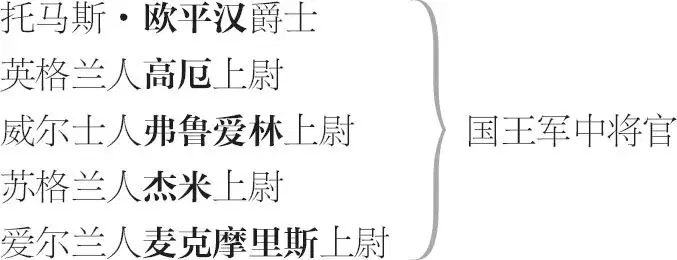
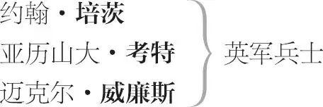

亨利五世
致辞者
英方
亨利五世
贝德福德 公爵，国王之弟
汉弗莱，格洛斯特 公爵，国王之另一弟
埃克塞特 公爵，国王之叔父
约克 公爵，国王之堂兄
威斯特摩兰 伯爵
沃里克 伯爵
索尔兹伯里 伯爵
坎特伯雷 大主教
伊利 主教
尼姆 下士
巴道夫 中尉
旗官毕斯托尔
老板娘奎克莉 ，经营一家酒馆，毕斯托尔之妻
侍童 ，原为福斯塔夫之童仆


传令官
法方
法王 ，查理六世
王后伊莎贝尔 ，法王之妻
太子 路易，法王和王后之子及继承人
凯瑟琳 ，法王和王后之女
艾丽丝 ，凯瑟琳之侍女
法国大元帅
勃艮第 公爵
蒙乔 ，法国传令官
阿夫勒尔总督
波旁 公爵
奥尔良 公爵
贝里 公爵
朗菩尔 爵士
葛朗伯莱 爵士
法国驻英大使
法国贵族 数人
众兵士、信差及侍从
开场诗
致辞者上
致辞者 啊，光焰万丈的缪斯女神，
愿您高登灵感的至高天境，
王国作舞台，
王侯充戏伶，
君王览尽宏伟演绎的壮景！
于是善战的哈利崭露身手，
一派战神威风，身后紧随着，
饥馑、刀剑与烈焰，
如猎犬暂系绳缰，伺机而动。
然而在座绅士淑女请包涵，
我等愚辈斗胆在这破台上
演绎如此辉煌的史迹春秋。
难道这斗鸡场似的小舞台
容纳得下法国的广袤疆土？
我们竟能将威震阿金库尔的
盔甲兵将囿于这木头圈 1 内？
见谅吧！既然加一个圆圈 2 ，
可造一百万，那就让我们
凭借你们想象力的驰骋，
于无形之中招来万马千军。
想象此时围在高墙之内的
是两大王国，疆界相峙立，
被险要狭窄的洋流 3 隔离。
以你们的神思补我们之拙，
化一人为千，想象力奔腾。
我们一提到马，你们就见
万马奋蹄齐奔，
扬起尘埃滚滚，
在你们遐想之中，国王穿越时空，
时此时彼，忽西忽东，
将多年功业集于一小时沙漏中。
为此容我在史剧大幕开启之前，
说这几句开场白：谢君海涵，
请静心观听、嘉意赏评这出戏文。
下
第一幕
第一场 / 第一景
伦敦王宫内
坎特伯雷大主教与伊利主教上
坎特伯雷 主教，且听我说。这同一议案
今又提出，先王 4 治下第十一年，
就可能通过，后来果然通过了，
于我等不利，可当时战乱不休，
这个议案并未执行，不了了之。
伊利 大人，如今我们怎样阻挠这一议案通过？
坎特伯雷 这个问题必须仔细思量，
以作定夺取舍。
如果逆我们之意而通过，
我们将失去大半的财产。
虔诚者遗捐教会的民地，
将从我们手中剥夺充公；
估算国王以此足可豢养
十五伯爵、一千五爵士
以及六千二百绅士之多。
此外为救济老弱病残者，
此财足供一百所济贫院；
再者每年可为王库缴贡
一千镑。此议案如是说。
伊利 这无异于一饮而尽。
坎特伯雷 连杯子都吞啦。
伊利 有何良策抗衡呢？
坎特伯雷 国王英明，泽被天下。
伊利 他心存厚爱于神圣教会。
坎特伯雷 他少时行状与今迥异。
其父之崩亡以后，
他的荒诞似亦随即终结。
慎思自省之气概，
如天使降临其身，
将忤逆不羁的亚当劣性，
驱逐于身心之外，
唯留天生美德于心之乐园。
从未见过不良浪子，
如此幡然突变君子，
洗心革面如此之迅猛彻底，
以大浪淘沙之势荡涤锢蔽，
无人能像当今王上顷刻间
除净其顽如九头蛇的乖癖。
伊利 我王之变，我等之福。
坎特伯雷 听他说教布道，
您不由得不赞叹，
私心祈愿他当上教长；
听他纵论国事，您会佩服
他的见识博大、研探精微；
听他论及战争，如闻妙乐，
恐怖的厮杀化为悦耳之音。
任何难题都在他手中化解，
他解戈耳狄俄斯结 5 易如解袜带；
他开言，空气这自由精灵，
也会立刻肃静，
人们惊叹无语，
陶陶然聆听他的美言丽词，
生活的艺术和经验教会他
能言善辩，这可真是奇迹，
当时殿下何以能学有长进，
既然他自暴自弃怠惰无为，
交友粗鄙尽皆游手好闲者，
消磨光阴于日夜寻欢作乐，
不学无术，学业一片荒芜，
放纵声色，不思回头是岸，
不离不弃，尽是三教九流。
伊利 荨麻之下草莓丰美，
邻劣果而彰其鲜腴。
王子的睿智与才思，
掩隐在荒诞外表下，
就像夏日草之生长，
夜间暗自长势最快，
人同草木禀此天性。
坎特伯雷 必定如此，奇迹叹为观止。
所以我们须承认世事趋善，
皆循自然之道而行。
伊利 可是，英明的主教大人，
下议院力图通过此议案，
而今如何挫其逼人锋芒？
王上意欲何为？赞成否？
坎特伯雷 他的态度好像不偏不倚，
或许可说更倾向于我们，
而非那些不肖之徒，
逆我而行，谋图通过议案。
因我以教士会议之名义，
对陛下许诺捐一笔巨资，
其数额之大已远远超过
教会以往所献历代先王；
同时也向陛下细陈时局，
就中涉及法国诸多事宜。
伊利 这许诺被接受了吗，大人？
坎特伯雷 陛下欣然接受，但时间仓促，
忙于急务，未听我详叙。
他承袭几个公国之权，
完全无可争议，
他也有权问鼎法国王位，
因为他的身份
是爱德华 6 之曾孙。
伊利 什么事情如此紧急，打断你们会谈？
坎特伯雷 其时法国大使求见陛下。
我想此刻陛下正在垂听。
现在四点钟了吗？
伊利 是啊。
坎特伯雷 我们进去听大使来意，
不过未听他开口，
我就猜中他所言。
伊利 我陪您同去吧，我也想听哩。
同下
第二场 / 景同前
国王[亨利五世]、汉弗莱[格洛斯特公爵]、贝德福德、克拉伦斯、沃里克、威斯特摩兰、埃克塞特[及众侍从]上
亨利五世 坎特伯雷大主教在哪里？
埃克塞特 他此刻不在御前。
亨利五世 宣他来见，叔叔。
威斯特摩兰 召大使进宫吗，陛下？
亨利五世 且慢，贤兄。
关乎我们和法国的大事，
正煞费神思，决策后再召大使。
两主教上
坎特伯雷 愿上帝和天使护佑圣上御座，
愿陛下长享江山万世之安泰！
亨利五世 谢您吉言，博学大主教。
请您以公正之心、严谨精神，
为我们解释一番。
按法国的萨利克法，
我们有无继承权。
您的解释不可牵强，
或虚造名分与实相违，
以致您灵魂负罪，
因主教出言激人奋进，
多少当今好男儿，
将为此喋血捐躯，
所以您之言语须慎重。
您以我们的生命押注，
惊动我们的沉睡干戈；
我以上帝的名义令您
慎之又慎，三思而言，
因如此两大王国开战，
必然使天下生灵涂炭，
一滴无辜血一声悲号，
哀叹衅刀兵者祸苍生。
秉此庄严诉求，说吧，
大主教，我们要倾听、
关注并深信您之所言，
出自您的纯洁的良心，
如经洗礼涤净了罪孽。
坎特伯雷 且听我言，圣上圣明，诸公众卿。
陛下拥法国王权，别无滞碍，
唯法拉蒙 7 传留一法典：
“In terram Salicam mulieres ne succedant. ” 8
“女人在萨利克族无继承权。”
而法国人把萨利克族之地，
非法曲解为法国所有，
认为法拉蒙乃立此法禁女权之先祖。
但他们的史家坦承此地在德国境内，
位于萨拉河与易北河之间，
当年查理大帝兴兵，
征服了撒克逊人之后，
一些法国人留住此地，
蔑视德国女人行不端，
所以特立此法以限制，
即萨利克族女人无继承权——
如我所言此区域地处
萨拉河与易北河之间，
现今此地在德国境内，
地名已变，称为迈森。
显然萨利克继承法之立，
并非为了在法国推行，
而直到法拉蒙王死后，
又过了四百二十一年，
法国人才把萨利克之地占据，
人们愚以为他立此法，
但他死于四百二十六年，
而八百〇五年，查理大帝征服撒克逊人，
划萨拉河一片入法境。
他们自己的史官也说，
他是克罗退尔的女儿
白莉蒂尔之普通子嗣，
竟有资格承袭法王位。
于格·卡佩 11 也是如法炮制，
篡洛林公爵查理之位，
自称林贾尔夫人之子，
实则有欺世盗名之嫌，
虚名不正，于史无据。
林贾尔夫人系出名门，
乃是查理二世之女，
查理二世乃路易王之子，
路易王又为查理大帝之子；
可见唯洛林公爵查理，
乃是查理大帝之正宗。
还有路易十世 12 也如此。
作为篡位者卡佩之独子称王难安，
后查明谱系才放心。祖母伊莎贝尔、
那漂亮的王后，乃是
爱芒贾尔夫人的女儿，
夫人即洛林公爵之女。
联姻将查理帝的血脉，
同法国的王冠重相连。
其如夏天阳光之昭昭，
丕平称王，卡佩夺位，
路易凭谱系安然登基，
全都依仗母系之名分；
法国王位传袭至今，
他们捧出萨利克继承法，
夺陛下的母系承袭权，
藏身网中，欲盖弥彰，
不愿承认他们的名位
窃自于您和您的父辈。
亨利五世 我提出继承权合法正当吗？
坎特伯雷 一切由我担待，威临天下的王上！
《民数记》上这样写道：
人死后，其遗产传其女。
我主英明，护卫己之权，
挥舞您的血红的旗帜吧，
回首列祖列宗的辉煌吧。
威仪凛然的陛下，去吧，
到您的曾祖 13 父的陵前，
他予您继承之名分，吁他威灵再显，
再到您的叔祖墓前去吧，
黑王子爱德华曾制服法军 14 ，
其时父王立山头观战，
看狮王幼崽践踏法国贵族的血迹。
啊，高贵的英国人，
以你们的一半人马，
足可对付法军全部精锐，
让剩下的一半袖手谈笑，
全无事可干，闲得发冷！
伊利 铭记勇武的先祖，蹈袭其勋绩。
您承继祖业，高居王座，
血脉高贵，且勇气可嘉，
皆秉承德高望重之先祖，
我主正当韶华，如五月之晨光，
勇猛倍于常人，正可大干事业，
建赫赫之伟绩。
埃克塞特 兄弟邻邦的国君们，
皆期望您奋发有为，
如先辈之雄狮振威。
威斯特摩兰 天下皆知陛下有理有力有势，
王上可谓无物不备无所不有。
当今英国贵族之富历朝不及，
臣民效忠陛下之心坚贞不贰，
虽然身尚在英国，心已驰法国战场。
坎特伯雷 陛下圣明，让他们亲身前往吧！
以热血刀剑赢您的权利，
为襄助此事，我等教士，
要为陛下募集一笔巨资，
远胜教士历来任何一项
捐奉于您的祖辈的贡银。
亨利五世 我们不仅须征讨法国人，
还须部署兵力防苏格兰，
因为他们会趁此机会，
举兵来犯我疆土。
坎特伯雷 启禀陛下，北部边境将士，
将会筑起一堵铁壁铜墙，
足可以抵挡边匪的侵扰。
亨利五世 我并非仅仅担心
流寇盗匪作乱，
我所忧心之事，
乃苏格兰人的居心，
他们一直是我们的恶邻。
您读史即知：我的曾祖，
每当他挂帅征讨法国，
苏格兰即倾巢出动来犯，
势如江河滔滔决堤之水，
趁我防守单薄攻城略地，
国内一时空虚的英格兰，
直面强邻，唯战战兢兢。
坎特伯雷 她只是虚惊一场而无损伤，
且听她自己诉说的历史吧。
当她的全部兵将远在法国，
她成了贵族们的哀伤寡妇，
却能独立支持，护卫自身，
而且还擒获了苏格兰国王， 15
拘押他像一条野狗到法国，
以被虏之王为爱德华增光，
歌功颂德，英名彪炳史册，
誉满天下如沉海的珠宝，
璀璨无尽，价值难估量。
伊利 可是有一句老话说得好： 16
“如果你要战胜法国，
势必先从苏格兰开始。”
一旦英格兰鹰出巢觅食，
苏格兰鼬鼠就乘虚而入，
偷食英王室之珍馐玉馔，
猫不在场，则耗子称王，
食之不尽，也损之毁之。
埃克塞特 于是猫必须在家守门户，
然而这种必要，
其实并不必要，
因我们的家财重重上锁，
并巧设机关，
以捕捉蟊贼。
外有兵将为国征战沙场，
内有良臣贤士谋划国是，
上下一心如奏天籁妙曲，
音有高低却一派和谐。
坎特伯雷 所以天赋予人
以各种功能，
相互协同一致，
而持之以恒，
目标既已定，
服从听命而行，
如蜜蜂这天性有序的生物，
以规矩之道，
晓示人伦之邦。
蜜蜂之国有国王和文武百官，
有些如各级官员，掌治于内，
有些如经商之流，闯荡天涯，
余者身带蜂刺，如兵丁持戈，
大肆掠取夏之葳蕤花蕾芬芳，
欣喜载途，运掳物班师回朝，
奉与帏幄中君临天下的帝王，
他忙于巡视哼歌而劳的工匠，
把他的黄金屋宇造得怎么样，
顺民们忙碌为他把甜蜜酿造，
可怜的运工们把沉重的财货，
络绎地扛进帝王的窄门深宫，
而那铁面的法官哼一声威严，
把打哈欠的懒雄蜂处以极刑，
死在无情的刀斧手的屠刀下。
这就是我的结论：共谋大事，
方法可不同，
正如万箭齐发，
皆向靶心，条条道路通一城，
众水入海，日晷之线聚于心，
万事备，目标一，其成可期。
所以出师法国吧，陛下，
将您的快乐英格兰分为四，
您率四分之一前往法国，
所向披靡，威震高卢之敌。
假如凭着四分之三的力量，
我们防不住野狗来犯家门，
那我们只有在惶恐中度日，
国威扫地，丧失一世英名。
亨利五世 传法国王太子的信差觐见。
[若干侍从下]
我们毫不迟疑，毅然决然，
上天助我，众卿鼎力助我，
法国既属我，它必臣服，
否则我定要叫它灰飞烟灭。
要么我们为王高坐法国，
辖制其广土和公爵的领地，
领地之大，辽阔几如王国；
要么我们埋骨那荒山秃岭，
无坟无墓，无声无息无名。
要么历史大书特书颂我等，
要么我们的坟前冷落凄清，
连一行淡漠的墓志铭也无，
哑然无语，如土耳其奴仆。 17
法国大使上
我们正恭候王太子的见教，
听说你们为太子所遣而非王命。
大使甲 不知陛下是否恩准我们，
尽职尽责，以恪尽使命，
或者我们从简行事而已，
略述太子之意以了公干。
亨利五世 我不是暴君，乃基督国王，
其七情六欲有节有制有控，
如囚歹徒于狱中令其就范。
所以开诚布公，畅所欲言，
告诉我们王太子所思所想。
大使甲 既然如此，我要言不烦相告：
陛下最近派使节到法国，
以先帝爱德华三世的名义，
要我们割让几个公爵领地。
对此我主王太子有言在此，
说你太天真太稚气不懂事，
奉劝你切勿存非分之想，
得法国之物非跳舞之易。
你花天酒地难进公爵领地。
所以他特地送你这箱珍宝，
呈上一箱子
更合你的胃口更投你所好；
希望就此断了你领地奢想，
勿再唠叨。此乃太子之言。
亨利五世 是什么宝贝，王叔？
埃克塞特 几个网球，陛下。
看箱内
亨利五世 我很高兴太子如此饶有风趣，
更感谢他的厚礼与诸位的辛劳。
一旦我们的球拍配好这几个球，
我们必将前往法国去打一局，
定将他的老王的皇冠打落在地。
告诉他吧，他交了一个死对头，
全法国将变成骚乱的网球场。
他的叵测之心，
我看得很分明，
竟嘲弄我年少轻狂的荒诞岁月，
枉然无知那段光阴我并未虚掷。
那时我视英格兰王位不足重轻，
远离宫廷浪迹天涯，寻欢作乐，
离家无羁绊之快活，人之常情。
告诉太子我一旦踞有法国王位，
我将以帝王之威仪权势临天下。
胸藏大志，我默默韬光养晦，
如凡人终日劳作，勤苦营生，
而我将由此升起，光焰炬天，
煌煌然照得全法国睁不开眼，
哈，王太子望我们一眼就瞎。
告诉快活的太子他这一嘲弄，
已将他送来的网球变为炮弹，
他的灵魂将在复仇中被熬煎，
因为复仇将与弹丸轰隆齐飞，
而王太子的这一嘲弄之轻妄，
将弄掉无数丈夫而大造寡妇；
还将弄掉母之子，弄坍城池，
尚未成胎之命腹中待生之子，
将都有理由诅咒太子的轻狂。
可是这一切取决于上帝之意，
我祈求上帝，以上帝的名义，
着你告知王太子我即刻就到，
以我之力雪恨，建一番功业，
堂堂正正之举，神圣之使命。
所以，你们平安打道回府吧，
告诉太子他的玩笑很是浅薄，
千万人为此而笑更为此而哭。
送他们平安上路吧。再会。
两大使下
埃克塞特 这是一个大快人心的口信啊。
亨利五世 我希望送礼者 18 为之脸红。
诸位卿相，
切莫失此出兵良机，
除了法国，
此刻我们别无他念，
唯有上帝之思先于事业的考虑。
所以火速集结人马粮草和兵器，
万事谋划周全以丰满我军羽翼，
上帝助我将在太子老父的门前，
把他狠狠教训。
大家尽心尽力，
掀起这场正义之战吧。
喇叭奏花腔。众人下
第二幕
致辞者上
致辞者 如今全英国的青年，
皆急于奔赴疆场，
锦衣华服置箱底，
戎装最为时尚，
个个好男儿，
胸怀从戎报国志向。
卖牧场买骏马，
以英国神差 19 之迅，
脚下添翼，
追随基督国君之翘楚 20 。
如今的英国，
举国上下满怀期待，
剑锋隐藏，
皇冠王冕及大小官帽，
可望加戴于哈利及其追随者之顶。
法国人消息灵，知英军强势而来，
惶恐而计穷以图扰乱英人的目标。
啊，英格兰！您伟大心胸的化身，
内圣而外王，体小却怀雄心壮志，
如果您的子孙都仁爱孝贤而高尚，
为了荣誉，您可以成就多少伟业？
然而法国在您身上发现了瑕疵，
看呀，收罗了一伙心胸空虚之徒，
用邪恶的金币填满了他们的欲壑，
三个见利忘义的贼人，第一个是
剑桥的理查伯爵，第二个家伙是
马瑟姆的亨利·斯克鲁普勋爵，第三
是托马斯·葛雷，诺森伯兰的爵士。
贪法国的重金——重罪啊！——
他们同惊恐的法国共谋圣王 21 之命，
在他登舟去法国前身在南安普敦 22 时，
如魔鬼与叛逆得逞，他们亲手弑君。
各位耐心一点，我们将把距离缩短， 23
把一出戏凑满。钱已付，叛徒议定，
国王已从伦敦出发，现在场景转移，
先生们，搬到南安普敦，剧院也搬去，
各位须安坐，我将你们安全地送走，
送到法国再送回来，我施展魔力，
让你们轻轻松松飘过这狭窄的海峡， 24
我尽可能不让任何看戏人晕船反胃。
可是在国王出场前，我们原地不动，
等他驾到后，我们才转景到南安普敦。
下
第一场 / 第二景
伦敦，具体地点不详，或在一条街上
尼姆 25 下士与巴道夫中尉上
巴道夫 幸会，尼姆下士。
尼姆 早安，巴道夫中尉。
巴道夫 怎么，旗官毕斯托尔 26 同你成了朋友啦？
尼姆 我这方面，我无所谓。我本来就不爱说话，可是该笑的时候，我也笑一笑——但要顺其自然。我不敢厮杀，但我会两眼一闭把我的铁家伙伸出去。这很简单，有什么了不起的？我的剑可以用来烘奶酪，它同任何男人的剑一样不怕冷，就这么回事。
巴道夫 我愿意做东请你们吃早饭，联络感情，成为朋友，我们三人结拜为兄弟，一起到法国去。就这么办吧，尼姆下士。
尼姆 确实，我能活多久就要活多久，毫无疑问。哪天我活不下去了，就一了百了。这是我的最后一张牌，最后一着。
巴道夫 确实，下士，耐尔·奎克莉嫁给了他，肯定是她负了你，因为你同她早就订了婚的啊。
尼姆 我说不清楚。该怎么办就怎么办。人可要睡觉的，睡觉的时候脖子还好端端的，有人说刀子是有锋芒的。该怎么办就怎么办。虽然耐心是一匹累了的母马，她还得勉力前行。事情必定有个了结。嗨，我说不清楚。 27
毕斯托尔与[老板娘]奎克莉上
巴道夫 毕斯托尔旗官同他的太太来啦。下士，好人，这会儿忍着点。——怎么样，开店的毕斯托尔？
毕斯托尔 杂种，你叫我开店的？哼，凭我这只手起誓，
我最恨这称呼，我的耐儿 28 也不招客了。
老板娘奎克莉 不招客啦，确实，很快就不招客了。我们留宿十多个良家妇女，她们靠做针线活老老实实过日子，可是人家以为我们在开窑子。啊，天哪，圣母呀，如果他不把家伙拔出来的话，有人就要在这儿通奸杀人啦。 29
尼姆和毕斯
托尔拔剑
巴道夫 中尉啊，下士啊，大家好自为之，不要在此动手。
尼姆 呸！
毕斯托尔 呸你，哈巴狗！尖耳朵狗！
老板娘奎克莉 尼姆下士，好样的，好体面，把剑收起来吧。
二人插剑入鞘
尼姆 你愿跟我走吗？我想同你单独在一起。
毕斯托尔 什么“单独”，恶狗？啊，毒蛇！
你这张最叫人吃惊的脸才“单独”，
你的牙齿、你的喉咙才“单独”，
你那恶肺、你的肠胃，我的天哪，
也“单独”，最恶心的是你的臭嘴！
我能对付你肠肝肚肺里的“单独”，
我毕斯托尔的家伙已挺立起来啦，
火光一闪，马上就要发射出来咯。 30
尼姆 我可不是巴巴松 31 ，你的咒语降伏不了我。如果我有心情的话，我可以把你收拾得心服口服。如果你嘴上无德，毕斯托尔，我只消轻剑一挥，就堂堂正正地把你结果了。如果你愿意同我交手，我会公平合理地把你的五脏六腑捅那么一点点，那才精彩。
毕斯托尔 啊，说大话的狂妄东西！
坟墓已经张口等你，
死到临头，拔剑吧！
二人再次拔剑
巴道夫 听我说，听我一句忠告：哪个先出手，我就一剑刺他个里外通透，我是军人无戏言。
拔剑
二人插剑入鞘
毕斯托尔 这是一句狠话，足可消人怒气。——
把你的手伸给我，你的前爪。
对尼姆
你的胆量真大啊。
尼姆 我要割断你的喉咙，那是迟早的事，干得光明正大，那才精彩。
毕斯托尔 “割断喉咙！” 32
一句话而已，我再次蔑视你。
啊，毛毛狗，想抢我的娘子？
休想，快到医院去，
从蒸汽澡盆里， 33
找一个像克瑞西达的麻风女， 34
她的芳名叫桃儿·贴席 35 ，你娶她吧。
原来的奎克莉 36 ，我已娶为妻，
将不弃不离，她是天下唯一。
要言不烦，何须啰唆。
侍童 37 上
侍童 我的毕斯托尔店主，你得来看看我的老爷呀，还有你，老板娘，他得大病啦，快倒床啦。——好人巴道夫，把你的脸伸进他的被窝里，像暖炉一样暖和暖和他吧。 38 说真的，他病得要死啦。
巴道夫 滚开，小流氓！
老板娘奎克莉 毫无疑问，他马上就会成乌鸦的点心。 39 国王已经杀死了他的心呀。 40 好丈夫，快回家啊。
[老板娘与侍童]下
巴道夫 看我薄面，言归于好吧。
我们必须共赴法国，为何相视如仇？
毕斯托尔 让洪水滔天，魔鬼饿嚎吧！
尼姆 你欠我八先令的赌账该还了吧？
毕斯托尔 贱奴才欠账还钱哩。
尼姆 我现在就要你还钱，这可是正事。
毕斯托尔 男子汉以勇取胜。接招。
[二人]拔剑
巴道夫 凭我手中这把剑发誓，谁先动武，我就宰他。以剑起誓，我说到做到。
毕斯托尔 以剑赌咒，此咒必应。
插剑入鞘
巴道夫 尼姆下士，如果你愿意同我交个朋友，我们就成朋友；如果你不情愿，我们也不妨做对头。请你收剑吧。
毕斯托尔 还你一枚金币 41 ，立即付给你，
再请你喝酒，情谊重如兄弟，
我为尼姆活，尼姆为我而生，
这样岂不天公地道？
我将做军需商，
财源必定兴旺。
把手伸给我吧。
尼姆 你要还给我金币吗？
毕斯托尔 现金付还，分文不少。
尼姆 那好啊，这才够意思。
老板娘[奎克莉]上
老板娘奎克莉 你们都是父母生养的，快去看看约翰爵士吧。啊，可怜的人！他害的是伤寒，高烧发抖。好人们啊，快去看看他吧。
[下]
尼姆 王上对爵士大发脾气，把他吓坏了，实情如此而已。
毕斯托尔 尼姆，你说对了，
他的心碎了硬了 42 。
尼姆 国王倒是个好国王，可是情不自禁，也有脾气呀。
毕斯托尔 我们去安慰安慰爵士吧，因为我们这些小羊羔还得继续活下去啊。 43
[众人下]
第二场 / 第三景
南安普敦（英格兰南部海岸一港市）
埃克塞特、贝德福德与威斯特摩兰上
贝德福德 上帝在上，陛下居然轻信这伙卖国贼。
埃克塞特 最终他们难逃法网。
威斯特摩兰 他们显得多么从容自若，
似乎满怀忠诚不贰之情，
一心报国，效命于王上。
贝德福德 王上已知道他们的图谋，
他们做梦也没想到信被截获。
埃克塞特 而那个人正是王上的密友，
恩宠重重，腻了他的胃口，
以至贪图异国之财 44 而叛君，
机关算尽，欲害王上性命。
号角齐鸣
亨利五世、斯克鲁普、剑桥、葛雷[及众侍从]上
亨利五世 趁此好风，我们上船吧。——
剑桥伯爵、马瑟姆勋爵，
还有您，高贵的爵士，
我愿闻听各位的高见。
你们认为我们的军力，
足以击破法国之劲旅，
完成远征使命，不枉此行吗？
斯克鲁普 无可置疑，陛下，只要人人各尽其力。
亨利五世 对此我深信不疑，
因为我坚信，
随我出征者，
皆同心同德；留守国内者，
无不冀我军，凯旋而归返。
剑桥 试看普天之下君王之中，
绝无比陛下更受爱戴者，
您的德政荫庇下的臣民，
无怨诽之言无委屈之事。
葛雷 确实如此，连先王的宿敌，
如今也冰释旧恨为您效力，
尽忠职守，热血满腔事君。
亨利五世 对他们我是铭感在心，
即使我忘记如何用手，
也不会忘记，
论功赏赐他们。
斯克鲁普 于是为您效劳者臂坚如钢铁，
心怀希望而不觉艰辛之为苦，
效忠陛下，一生一世不懈怠。
亨利五世 我也这样认为。——
埃克塞特王叔，
把昨天羁押的那人释放了吧，
我觉得他的放肆是酒后失言，
既然酒醒知过，那就饶了他。
斯克鲁普 陛下仁慈，但太过宽容。
陛下，惩办他以儆效尤，
以防恶例为范谬种流传。
亨利五世 啊，我们还是以仁慈为念吧。
剑桥 陛下不妨宽严相济。
葛雷 陛下，惩戒之后，
且饶他一命，
更显示您慈悲胸怀之博大。
亨利五世 唉唉，你们爱我至深至切，
以致对这个可怜人太严苛！
如连无意的小过也不忽视，
一旦精心策划的重罪出现，
我们将要把眼睛瞪多大呢？——
还是放了那人，尽管剑桥、
斯克鲁普和葛雷诸位贤卿，
出于爱我护我而要惩处他。——
现在来商议法国战事吧：
谁是新近就任的执政大臣 45 ？
剑桥 我是其中之一，陛下。
陛下令臣今日请命。
斯克鲁普 陛下也着臣如此。
葛雷 还有我，圣上。
亨利五世 剑桥伯爵理查，这是你的委任状。——
递与他们每人一文件
斯克鲁普勋爵，这一份是你的。——
葛雷爵士，你也有一份。
各位细看，便知道
我视你们身价几何。——
威斯特摩兰伯爵、埃克塞特王叔，
我们今夜登舟。——
怎么啦，贤卿？你们在公文上，
看到的是什么，以至面无人色？——
你看他们骤变，容颜惨白如纸。——
你们看见什么，吓得脸上血气尽散？
剑桥 我知我罪，
乞施王恩。
葛雷和斯克鲁普 乞陛下恕罪。
亨利五世 我本有一颗慈悲向善之心，
但被你们刚才的谏言灭杀。
如知羞耻，你们休言慈悲，
你们自己的论调自作自受，
如犬反伤其主，自哀自痛。——
你们看哪，这伙英格兰的妖孽。
这个剑桥伯爵，诸位知道，
我待他甚厚，荣宠加其身，
尊享所有与地位相当之禄；
而此人为金币与法国人为奸，
誓言要在南安普敦将我杀害。
这个爵士 46 受王恩不亚剑桥，
也合谋弑君。——啊，斯克鲁普勋爵，
你这凶残歹毒、忘恩负义、
丧尽人性禽兽不如的东西，
我该用什么言辞数落你呢？
我的一切秘密尽在你手中，
你知道我的心思我的底细，
只要你搞阴谋，卖主求荣，
你可以把我铸成你的金币。
难道异国收买你如此彻底，
以致你作恶务尽不留余地，
连伤害我的手指之恶也为？
太令人难以置信不可思议，
以至事实已如黑白分明，
我却依然视而不见不信。
叛逆和谋杀从来相勾连，
如两妖合一，二恶为害，
公然作祟，邪道之必然，
本不值得我们大惊小怪。
而你却悖反自然之常理，
让叛逆和谋杀成为奇迹；
这恶魔如此狡黠蛊惑你，
荒谬绝伦，为地狱之最。
别的恶魔诱人反叛不轨，
皆以形色为表掩饰行径，
并以虔诚为闪亮的幌子。
而此恶魔调教你谋反叛，
却未给予你叛国的原委，
除非封你为逆贼是理由。
如果这恶魔诱惑你之后，
大摇大摆周游了全世界，
回到冥冥地府群魔之中，
说，“骗天下人之灵魂难，
骗这个英国人的灵魂易。”
啊，你让信任感染疑虑！
此人看起来忠心耿耿吗？
嗨，你看上去就是如此。
此人显得正经而博学吗？
嗨，你看上去就是如此。
此人出身于名门望族吗？
嗨，你的出身就是如此。
此人笃信宗教且虔诚吗？
嗨，你看上去就是如此。
此人食饮不贪而节俭吗？
不纵情不耽乐不动怒吗？
处世从容不意气用事吗？
温文尔雅有谦谦之风吗？
不偏听偏信三思而行吗？
你外表正是这样的人杰，
你的堕落令天下贤德者，
背负污名，蒙羞而毁誉。
我悲哀，你的反叛如人类再次堕落。 47
——此三人罪行昭著，
对埃克塞特
逮捕他们，按国法制裁。
愿上帝宽恕他们的反罪。
埃克塞特 我以叛国重罪逮捕你，剑桥的理查伯爵。——我以叛国重罪逮捕你，马瑟姆的亨利·斯克鲁普勋爵。——我以叛国重罪逮捕你，诺森伯兰的托马斯·葛雷爵士。
斯克鲁普 上帝正义，我们的阴谋败露，
我罪孽深重，死有余辜，
乞请陛下宽恕我的罪过，
尽管我之命赔了我之罪。
剑桥 我并非受法国金银诱惑，
虽然我承认这是一个动机，
促使我立即实施我的谋图。 48
幸亏上帝阻止了此举得逞，
我罪有应得，谨伏服天意，
唯求上帝和你恕我之罪过。
葛雷 对于最凶险的叛国罪被揭露，
我被阻止实施这万恶的阴谋，
我比忠心的臣民更为此欢欣。
不饶我的命，
宽恕我的罪过吧，陛下。
亨利五世 愿大慈大悲的上帝宽恕你们！
听着，这是对你们的判决：
你们里通敌国，收贿谋反，
策划弑杀君王，卖主求荣，
亲王臣僚受辱，如阶下囚，
平民百姓，任由外族欺凌，
毁我社稷，断送王国江山。
就个人而言，我无意报复，
然国家为重，你们欲毁之，
我就将你们交由国法处治。
去吧，可怜虫，去受死吧！
愿仁慈的上帝给你们耐性，
以便慢慢品尝死亡的滋味，
从而真心忏悔你们的罪过！
——将他们押下去！——
[剑桥、斯克鲁普与葛雷被押]下
好啦，众卿，进军法国，
于我于你们，这同样荣耀。
我毫不怀疑此战正义必胜，
因上帝已助我揭发了叛谋，
道路既已扫清，出师必顺。
我毫不怀疑一切障碍皆除，
亲爱的同胞们，踏上征程。
让我们把军队交上帝之手，
立即行动吧。
举战旗向前，
士气昂扬，扬帆出海吧。
不在法国称霸，
休做英格兰之王。
喇叭奏花腔。[众人下]
第三场 / 第四景
伦敦，具体地点不详，或在一条街上
毕斯托尔、尼姆、巴道夫、侍童与老板娘[奎克莉]上
老板娘奎克莉 求您哪，我的心肝宝贝好丈夫，让我一路陪您去斯泰恩斯 49 吧。
毕斯托尔 别远送啦，大丈夫的心也愁别。
巴道夫，快活点；尼姆，振作精神；
鼓起勇气吧，孩子，
我们要哀伤福斯塔夫之死。
巴道夫 唯愿我与他同在，无论他在哪儿，天堂或者地狱。
老板娘奎克莉 不，他肯定不在地狱里，他在亚瑟 50 的怀抱里，如果人能上天堂投入亚瑟的怀抱的话。没有人的临终比他了结得更好，他走得像一个未满月的婴儿。他刚好在十二点和一点之间断气，恰在潮涨潮落之间。我看见他在床单上摸索，弄那些花 51 ，对着自己的指头笑，我就知道他黄泉路近了，因为他的鼻尖发白，就像绿色的赌盘上的一枝羽毛笔。 “如何，约翰爵士？”我问道，“怎么样啦，男子汉？振作起来吧。”于是他叫起来：“上帝呀，上帝呀，上帝呀！”叫了三四遍。这时，为了安慰他，我要他不要去想上帝，希望他不必操这份心。于是他叫我在他的脚上多盖些被子。我把手伸进被子里，摸他的脚，发现他的双脚冰冷如石头。我摸到他的膝盖，再往上摸，再往上，整个人都冷得像石头。
尼姆 有人说他大骂萨克酒 52 。
老板娘奎克莉 唉，他骂了。
巴道夫 还骂女人。
老板娘奎克莉 不，没骂女人。
侍童 对，他骂女人，说女人是魔鬼的化身。
老板娘奎克莉 他从来都不喜欢康乃馨，他讨厌那种颜色。 53
侍童 他说过，魔鬼会为了女人的缘故要他的命。
老板娘奎克莉 谈起女人，他的确说过这样的话，可是他那时已经疯疯癫癫的 54 ，大谈巴比伦的妓女如何如何。
侍童 你还记得吗，他看见巴道夫的鼻子上有一个跳蚤，就说那是一个黑色的灵魂在地狱的烈火里熬炼。 55
巴道夫 咳，而今烧起这堆火的燃料已尽——我跟随他这么多年就得到这点好处。 56
尼姆 我们该动身了吧？王上要从南安普敦出发了。
毕斯托尔 好啦，我们走吧。——亲爱的，
让我吻你。把家财看紧。
吻她
遇事多个心眼动脑筋。
这世界只认钱，交易见现金。
人不可信，诺言如草，
男人发誓，轻如薄饼，
抓牢持稳，钳赛过钉。
宝贝切记：“慎言慎行勿轻信。” 57
临别休哭，杀向法国。
像群大蚂蟥去吸血，猛吸啊！
侍童 有人说，吸血不健康。
毕斯托尔 亲亲她的芳唇，即上征程。
巴道夫 别了，老板娘。
吻她
尼姆 我亲不了这个嘴，这正是妙处所在。不过，就此告别吧。
毕斯托尔 操持家务，深居简出，严守妇道，这是我对你的临别诫言。
老板娘奎克莉 别了。再会。
众人[分头]下
第四场 / 第五景
法国宫廷，位于法国北部之鲁昂
喇叭奏花腔。法王 58 、太子、贝里与布列塔尼公爵[、法国大元帅及余]上
法王 英军倾巢出动来犯，
此一战必生死攸关，
我们要举全力抗击。
贝里公爵、布列塔尼公爵、
布拉班特公爵和奥尔良公爵，
你们即刻出发；
而太子，
你火速部署精兵，
加固城防工事，
英国人来者不善攻势凶猛，
如滔滔之水卷入漩涡之骤。
我们必须余悸在心而谨记
过去败绩的教训 59 ：
低估英国人这个致命敌人。
太子 德高望重的父王，
我们确应武力抗敌，
和平不应消磨斗志，
即使无战事和纷争，
也须强防务募兵丁，
常备不懈以应不测，
好像战祸已迫眉睫。
所以我们须倾全力，
巡视全法国各处，
以正弊端而补薄弱，
但切勿显怯懦畏惧——
无所畏惧于心于行，
仿佛听见英人狂舞，
以庆祝圣灵降临节 60 ，
陛下，英格兰王昏庸，
虚荣浅薄，我们无须过虑。
大元帅 啊，太子之言差矣！
您错看了当今的英王。
殿下询问甫归的使节，
便知英王接见他们时，
仪态何等地庄重威严，
朝臣济济，何等俊杰，
纵执异议，何等谦虚，
持守大节，何等决绝。
他状如布鲁图 61 之表，
以愚为外衣掩其心机，
如园丁用肥料掩根须，
将先发芽而为最秀美。
太子 并非如此，元帅大人。
可这样认为，也无妨。
事关国家疆土之安危，
最好高估敌人之实力，
以加强守备充实防务，
如防卫弱而捉襟见肘，
犹如吝啬之人，
惜料而毁一衣。
法王 我们视哈利为强敌，全力抗击。
他的父辈食我们的血肉，
在我们的家园横行肆恣，
他承袭祖宗的嗜血本性。
当年克雷西之役败，国耻难忘，
我之全部臣僚作阶下囚，
被威尔士的黑太子俘虏，
他的黑色恶名叫爱德华，
其时其山地出身之老父，
正高站山顶金色日光中，
笑看勇武后辈涂炭生灵，
摧毁了历时二十年之久、
上帝和法国的父老们，
所造就的一代楷模精英。
此哈利秉承胜者之血脉，
我们要防他具天生威猛，
且得命运之宠吉星罩护。
一信差上
信差 英王哈利遣来的使节，
求见陛下，望予恩准。
法王 立刻召见他们。去吧，带他们来。
[信差及余下]
你们看吧，各位，真是步步紧逼啊。
太子 猛回头以止追逼。
你跑得越快越远，
胆怯的狗越狂吠。
父王，当机立断，
奋起抗英，痛击顽敌，
叫他们见识您是一国之君。
陛下，比自卑，自负非恶德。
埃克塞特[及余]上
法王 英格兰王兄派你来的吗？
埃克塞特 他派遣我来，并问候陛下。
以上帝之名，敦促你自行退位，
卸下借来的王室隆誉，
仰承天恩，皈依造化，
循遵国法，所有荣耀——
王位和依惯例传统，
王位所拥有的尊荣——
皆归属于他及其子嗣。
便于你明白这一要求，
既非不义、也不悖理，
不是从逝岁的朽坟里，
亦非在忘年的尘埃里，
刨扒出他的这一主张，
他送你这份王室宗谱，
递过一文件
支系悠远真确。你看明白，
他是他的最显赫祖宗、
爱德华三世嫡系后裔，
命你交出王位和王国，
你非法窃有之名之位，
还与他这正统的传人。
法王 若不如此，那又如何？
埃克塞特 兵戎相见，即使你藏王冠于心，
他也定要把它掏出来。
他将如风暴袭来，撼地震天，
如主神朱庇特之降临，
志在必得，先礼后兵，
且以慈悲为念，着你交出王冠，
以免开战端祸及苍生，
涂炭生灵，血染刀兵，
寡妇悲泪，孤儿啼鸣，
亡夫喋血，哀女断肠，
哭丈夫哭父亲哭郎君，
哭声震野，民怨冲宵，
声声斥责你祸国殃民。
这是他对你的要求和警示，
也是我带给你的口信——
如太子在此，我要专致问候。
法王 就我而言，我会细加斟酌，
明天你将把我的全部意图，
带去回复我的英格兰王兄。
太子 就太子而言，
我在此代表他。英格兰对他有何见教？
埃克塞特 蔑视、鄙视、轻视之词，
凡不玷污我主身份之语，
就是他奉送给你的评价。
吾王有言：如你的父王，
不答应我们的全部要求，
以化解你对吾王的嘲弄， 62
他将叫你为此加倍偿还，
他的炮声将响彻法国，
山谷回响斥你无礼冒犯，
把你的嘲弄全回敬给你。
太子 即使父王答应，却与我愿相违，
我愿望之最即同英作对，
为达抗衡他的目的，
我送他巴黎的网球，
这正配他年少轻浮。
埃克塞特 他将叫巴黎的卢浮宫，
为这一框网球而动摇，
即使在强大的欧罗巴，
卢浮宫号称王宫之王。
如其臣民你会惊讶发现，
他同年轻时相比判若两人。
他惜时如金，一旦占领法国，
你的败绩将告诉你他的巨变。
法王 明天你就知道我们的全部想法。
喇叭奏花腔
埃克塞特 尽快让我们事毕而速返，
以免王上亲临斥我拖怠，
因他已经御驾降临此地。
法王 你们将很快被顺利遣返，
要答复如此重大的问题，
一夜晚不过恍然一瞬间。
喇叭奏花腔。众人下
第三幕
致辞者上
致辞者 凭想象之翅，场景飞转。
连思想也难追赶。
想象目睹国王启程多佛尔港， 63
战船雄姿迎初升太阳。
想象中船员攀帆索，
喧嚣声中船长哨声响，
发号施令待起航。
无形的风扬巨帆，
雄舸破浪驰大洋。
想象你站在海岸，
只见一城立巨浪，
船队直奔阿夫勒尔。 64
紧跟，紧紧跟上，
系你乡思于船尾，
离英国如别静夜，
留下大爷和小孩，
还有大娘守卫它，
因其老弱或幼小。
只要下巴长须者，
谁不奔赴法兰西？
驰骋你的想象力，
亲见一场围城战：
炮指围城阿夫勒尔。
想象法兰西大使，
前来回禀哈利王：
法王答应将其女
凯瑟琳婚配与他，
几个公国作嫁妆，
地小而无利可收。
条件既令人不悦，
轮到矫捷的炮手，
点燃可怕的大炮，
警号。火炮发射
将城池夷为平地。
请继续发挥想象，
补我等演出之阙。
下
第一场 / 第六景
法国北部的阿夫勒尔
亨利五世、埃克塞特、贝德福德与格洛斯特上。警号。[众士兵上，]架云梯于阿夫勒尔城墙
亨利五世 再次向突破口冲锋，亲爱的朋友们，
向突破口冲啊，否则英人之尸，
将把这城墙封堵围困。
和平时斯文谦卑，一旦战鼓响，
我们要学虎豹的行径，
鼓足勇气，热血沸腾，
收起善性，露出狰狞，
同仇敌忾，怒目圆睁，
眼如铜炮张口盯前方，
眉如危崖高悬势险峻，
下临大海惊涛击岸滨。
露出利齿，张大鼻孔，
憋一口大气绷紧神经。
冲啊冲啊，向前猛冲，
至高至贵的英格兰人，
传承善战父辈的热血，
父辈个个如亚历山大， 65
曾在此鏖战把敌杀尽。
不要玷污你们的母亲， 66
要证明你们呼为父者，
确确实实生养了你们。
为出身低微者立范吧，
教他们如何统兵打仗。
你们，好样的自由民，
在英格兰土地上成长，
显示出你们的出身吧。
我发誓你们当之无愧，
我毫不怀疑，只因为，
你们之中无平庸之辈，
你们的目光闪烁高贵。
猛如猎犬，待命冲阵。
狩猎开始，以此精神，
高呼奋进：“天佑哈利，
天佑英格兰和圣乔治 67 ！”
[众人下]
警号。火炮发射
第二场 / 景同前
尼姆、巴道夫、毕斯托尔与侍童上
巴道夫 冲啊，冲啊，冲啊，冲啊，冲啊！向突破口冲，向突破口冲！
尼姆 求求你，下士，喘口气吧；炮火太猛啦，我只有一条命啊。问题的关键是炮火太猛，这是明摆着的事儿。
毕斯托尔 确实如此，鲜血流，弹丸飞，
上帝子民，倒地毙命，
刀兵起落处，
唱
血肉漫染沙场，
赢万世名扬。
侍童 但愿我在伦敦的酒店里，我愿用我的一世英名换取一壶酒和平安。
毕斯托尔 而我，
如我所愿成真，
唱
我就心想事成，
但我要急于远行。
侍童 恰当，但不高尚，
唱
恰如枝头的鸟儿，
在放声歌唱。
弗鲁爱林上
弗鲁爱林 往突破口冲啊，狗东西！快滚，混蛋！
挥剑驱赶他们
毕斯托尔 发发善心吧，大爵爷，
可怜小民，息您大人之愤，
消消怒气吧，大爵爷！
大发慈悲吧，大善人！
尼姆 天大的笑话！您大人把大家都得罪啦。[除侍童外]众人下
侍童 我年纪虽小，却把这三个吹牛大王看得清清楚楚。我是他们三人的侍童，可是就算他们三个都来侍候我，也不够格；确实，三个这样的小丑加在一起也抵不上一个男子汉。巴道夫这个人，胆子小，红着脸，气势汹汹，其实不敢动手。毕斯托尔呢，利舌如刀，刀却无用，语言激烈，刀剑赋闲。至于尼姆，他听别人说寡言少语才是英雄汉，所以他不屑做祷告，以免被视为懦夫。他坏话说得少，好事也做得少，因为他从来没有打破别人的头，只在喝醉的时候在柱子上撞破了他自己的头。他们什么都要偷，还称之为“战利品”。巴道夫偷过一个琴匣子，搬了三十六英里远，卖了一个半便士。尼姆和巴道夫是偷窃成性的兄弟伙，有一次，他们在加来 68 偷了一把煤铲。我知道，偷这种战利品要倒霉。他们要我像别人的手套或手帕那样熟悉别人的口袋，可是掏别人的口袋有辱我的男子汉气概。这分明是纳赃取辱。我必须离开他们，另寻好差事，他们的无赖行径简直叫我恶心，叫我作呕。
下
高厄[与弗鲁爱林]上
高厄 弗鲁爱林上尉，您必须马上下坑道 69 去，格洛斯特公爵要同您说话。
弗鲁爱林 到坑道里去？您给公爵说，那可不是好玩的，因为，您听着，这些坑道不是按作战的要求挖掘的，深度不够，而敌人那边掘的坑道，您可以对公爵解释，比我们的深四码。耶稣啊，如果我们没有更好的办法，我看敌人会把我们的坑道全炸毁了。
高厄 围城的命令是下达给格洛斯特公爵的，而他却完全听一个爱尔兰人指挥，此人的确非常勇武。
弗鲁爱林 您说的是麦克摩里斯上尉，是不是？
高厄 我看就是他。
弗鲁爱林 耶稣啊，他是一头蠢驴，人间最蠢的驴子。我敢当他的面这样说。对于真正的战术即罗马战术 70 ，他不比一条哈巴狗懂得多。
麦克摩里斯与杰米上尉上
高厄 他来啦，同他一起的还有那个苏格兰上尉杰米。
弗鲁爱林 杰米上尉勇气可嘉，出类拔萃，据我所知，他深谙传统战术。耶稣啊，论起古罗马人的用兵征战之道，他雄论滔滔，当今军界无人可及。
杰米 向您问好，弗鲁爱林上尉。
弗鲁爱林 向阁下问好，杰米上尉。
高厄 情况怎么样，麦克摩里斯上尉？你离开坑道啦？士兵们把坑道挖好啦？
麦克摩里斯 天哪，坑道没有挖好，不挖啦，归营号吹过啦。我举手起誓，我以我父亲的灵魂起誓，这工事修得差劲，放弃了。耶稣保佑我啊，我本来要在一个小时之内炸毁这座城的。啊，工事修得差劲，差劲。我举手起誓，差劲！
弗鲁爱林 麦克摩里斯上尉，请您允许我，您听着，同您商榷用兵打仗之道、罗马人的兵家之道，您听着，争论也可以，友好恳谈也可以——一则阐明我的见解，一则呢，您听着，使我心悦诚服。这事关作战的原则与方略，非常重要。
杰米 那样太好啦，真的，二位好上尉，如果你们允许，我一定找机会奉陪；我一定这样，肯定的。
麦克摩里斯 此刻不是说空话的时候啊，耶稣救我吧。天气这么热，战争、国王、公爵，诸事纷繁，不是高谈阔论的时候。城池被围，军号召唤我们向突破口冲锋，而我们议论纷纷，无所动作，耶稣呀。这简直是我们全体的耻辱。上帝保佑，无所事事的耻辱，我举手为誓，奇耻大辱啊。有敌要杀，有事要做，而我们无所作为，耶稣保佑，咳！
杰米 我对天发誓，在我闭眼睛之前，我要为国效力，为国捐躯，至死不渝。总而言之一句话，我要勇武出击，全力以赴。圣母啊，我此时本来很愿意听你们二位的高见。
弗鲁爱林 麦克摩里斯上尉，我认为——请您听着，恕我直言——贵民族中并无很多人——
麦克摩里斯 我的民族？我的民族怎么啦 71 ？恶棍，杂种，混蛋，无赖。我的民族怎么啦？谁议论我的民族？
弗鲁爱林 您听我说，麦克摩里斯上尉，如果您误解别人的意思，那我也许会认为您对我也不以友善相待，请您听着，我同您一样是个好男儿，精通兵法，出身高贵，其他方面也出色。
麦克摩里斯 我还不知道您同我一样是个好男儿哩。耶稣保佑我，我决心砍您的头。
高厄 二位先生，你们互相误会啦。
杰米 啊，那就大错特错啦。
议和号起
高厄 城里吹响了议和号。
弗鲁爱林 麦克摩里斯上尉，来日找个更好的机会，请你听着，我要斗胆相告：我精通打仗用兵之道。话就说到这里吧。
众人下
第三场 / 景同前
仍在阿夫勒尔城外
城门前，亨利五世及随从上
亨利五世 城里的总督到底如何决定？
这是我所允许的最后谈判，
要么快接受我的最大恩惠，
要么与我为敌而自取灭亡，
我认为军人之称最适合我，
一旦我再开战衅攻打城池，
不把它彻底埋在废墟之下，
我誓不半途收兵不尽全功。
慈悲之门户行将完全关闭，
嗜血的士兵惯有铁石之心，
血手之所及，
将恣意屠戮，
其良知已如地狱大开鬼门，
杀灭城中娇艳淑女如刈草，
如花初放的婴儿也难幸免。
若罪恶的战争如魔鬼烈焰，
凶相毕现，
极尽破坏摧残，
果真如此，
我又其奈何哉？
若你们自招祸端，以至于，
纯洁的闺女惨遭乱兵奸淫，
果真如此，我又其奈何哉？
当邪恶泛滥，顺势而下时，
倾泻而来，什么能遏止它？
我不可能令疯兵暂停抢掠，
正如不可能传旨海怪上岸。
所以，阿夫勒尔的兵将们，
怜惜你们的城市和百姓吧，
趁此时我能掌控我的士兵，
趁恩惠之和风吹散了杀戮、
血腥与残暴的沉沉的战云。
否则，你们立刻就将目睹，
嗜血鲁莽的兵丁伸出黑手，
玷污你家闺女额前的秀发，
她惊骇而尖叫；你的老父，
被拽住银须，高贵的头颅，
往墙壁上撞；你家的婴儿，
被赤裸裸地挑在长矛尖上，
母亲发疯般哭嚎直上云霄，
如希律王屠城时的犹太女。 72
你们怎么办？是投降避灾？
还是负隅顽抗而自取灭亡？
总督[自高台]上[城墙]
总督 到今天我们已经绝望。
向太子求救，他却无力相助。
所以，至高至伟之王，
此城和此性命，由您悯情发落。
请进城吧，这一切，
皆听候陛下的裁夺，
因为我们已难自保。
亨利五世 快开城门。——埃克塞特王叔，
您带兵进入阿夫勒尔，
固守在此，严防法军。
对老百姓，广施怜恩。
尊敬的王叔，冬将至，
兵多染疾，我将率军，
退守加来。今晚在此，
为您座上宾，明天我即出征。
喇叭奏花腔[。国王及随从]入城
第四场 / 第七景
具体地点不详，可能在法国北部鲁昂城的法国宫廷内
凯瑟琳及一年长贵妇人[艾丽丝]上 73
凯瑟琳 艾丽丝，您去过英格兰，您的英语也讲得好。
艾丽丝 会一点罢了，公主。
凯瑟琳 请您教我吧，我必须学会讲英语。“手”在英语里叫什么？
艾丽丝 “手”吗？“手”叫“汉得”。
凯瑟琳 “汉得”。“手指”呢？
艾丽丝 “手指”？天哪，我搞忘“手指”了。让我想想。“手指”？我想“手指”叫“分格”。对，就叫“分格”。
凯瑟琳 “手”叫“汉得”， “手指”叫“分格”。我觉得我是好学生，很快就学会了两个英语单词哩。“指甲”叫什么？
艾丽丝 “指甲”吗？“指甲”叫“耐尔”。
凯瑟琳 “耐尔”。听着，看我念得对不对：“汉得”、 “分格”，还有“耐尔”。
艾丽丝 念得好，公主，很好的英语。
凯瑟琳 告诉我英语的“手臂”怎么念？
艾丽丝 念“阿蒙”，公主。
凯瑟琳 “胳膊肘”呢？
艾丽丝 念“爱尔膊”。
凯瑟琳 “爱尔膊”。我把您教我的这几个单词重念一遍。
艾丽丝 我看这太难了吧，公主。
凯瑟琳 对不起，艾丽丝，听我念吧：“汉得”、 “分格”、“耐尔”、“阿蒙”，还有“比尔膊” 74 。
艾丽丝 念“爱尔膊”，公主。
凯瑟琳 啊上帝，我忘了这个词！“爱尔膊”。“脖子”怎么念？
艾丽丝 念“尼克”，公主。
凯瑟琳 “尼克”。“下巴”呢？
艾丽丝 念“亲恩”。
凯瑟琳 “钦恩”。“脖子”，“尼克”；“下巴”，“钦恩”。 75
艾丽丝 好啦，公主真行，说真的，您把这几个词读得同英国人一样准啊。
凯瑟琳 有上帝助我，我无疑能很快学会英语。
艾丽丝 我刚才教您的，您忘记没有？
凯瑟琳 没有，我立即背给您听：“汉得”、 “分格”、 “美尔”……
艾丽丝 是“耐尔”，公主。
凯瑟琳 “耐尔”、“阿蒙”、 “比尔膊”。
艾丽丝 请原谅，公主，是“爱尔膊”。
凯瑟琳 我就是这样念的呀。“爱尔膊”、 “尼克”、 “钦恩”。“脚”和“长袍”怎么念？
艾丽丝 “夫体”，公主；另一个念“拱摁”。
凯瑟琳 啊，我的天！这两个字太难听哪，太粗俗，太下流，淑女不会说这些话，我绝不会在法国绅士面前出此言语。呸！ 76 这个“夫体”、这个“拱摁”！尽管如此，我还是把我的功课再背诵一遍吧。“汉得”、 “分格”、 “耐尔”、“阿蒙”、 “爱尔膊”、 “尼克”、 “钦恩”、 “夫体”、“拱摁”！
艾丽丝 太好啦，公主！
凯瑟琳 今天到此为止，我们进餐去吧。
同下
第五场 / 景同前
法王、太子、[布列塔尼公爵、]法国大元帅及余上
法王 他肯定已经渡过索姆河 77 了。
大元帅 如听任他不战而入我境，王上，
法国将无我们容身之地，
我们拱手将葡萄园送蛮族算了。
我们的父辈兴之所至留下的余种，
那些被嫁接在野木杂干上的枝条，
蓦然高耸于云端，
竟势压老树之顶？
布列塔尼 诺曼人，野种诺曼人，诺曼人野种！ 80
我不要命啦！ 81
如他们来势无可阻挡，
我要卖了我的公国，在阿尔比恩 82
那弯曲的岛上买一个泥泞的农场。
大元帅 战神啊！ 83 他们的勇气从何而来？
他们的气候不是阴冷多雾昏暗，
阳光也似乎鄙视他们很少照耀，
以至于花难盛开，果实难结吗？
难道把白开水当成大麦啤酒喝，
如驽马饮，能燃起他们的冷血？
而我们的滚滚热血，好酒相激，
倒似乎冷若冰霜？啊，为社稷，
我们不做悬挂在屋檐下的冰条，
任冷血之族在我们的沃土之上，
逞青壮蓬勃之威，显血气方刚！
若无壮士，大好江山也如粪土。
太子 凭信义和荣誉起誓，
法国的妻女们在嘲笑我们，
明言我们勇气已泄不如前代，
欲许身英格兰青年传宗接代，
为法国繁衍一代杂种勇士。
波旁 她们叫我们去英格兰舞蹈学校，
教蹦蹦跳跳转身就开跑的舞蹈，
说我们的功夫全在我们的脚掌，
临阵脱逃是高手。
法王 传令官蒙乔何在？即刻传他，
遣他去赠英格兰一言：法兰西无畏。
奋起吧，我的王公卿相们，
以锋于刀剑的荣誉精神，
疾驰疆场。查理·德拉勃莱、
高贵的法国大元帅；奥尔良、
波旁、贝里诸位公爵；还有
阿朗松、布拉班特、巴尔以及勃艮第公爵；
沙蒂永的雅克、朗菩尔、伏德蒙、
波蒙、葛朗伯莱、罗西等诸公；
福肯布里奇、福华、莱特拉、
布西科及沙罗莱的大公爵、
王公、男爵、贵爵和爵士们；
为雪国辱，阻挡哈利横行我土，
他旗幡之红，因染阿夫勒尔之血。
冲向他的军队，如融雪涛，
席卷河谷，以阿尔卑斯山之势，
居高而下，倾泻滔滔白沫。
冲啊，你们手握足够的军力，
将他俘获关进囚车押到鲁昂。
大元帅 君王之豪言，气吞云天。
我为他汗颜，人马区区，
且长途劳顿，非病即饥。
我敢肯定，他一见我军，
勇气立即乌有化为怯心，
为委曲求全而恭献赎金 84 。
法王 所以，大元帅，火速传蒙乔，
让他告知英格兰我们派人来，
问亨利愿意奉与我多少赎金。——
太子，你同我们暂留鲁昂。
太子 求父王别留下我。
法王 少安毋躁，你得同我们留下。——
立即出发，大元帅和众卿相，
击败英军，早传捷报入宫来！
众人下
第六场 / 第八景
法国北部，英军营地
两名上尉、英格兰人高厄与威尔士人弗鲁爱林上
高厄 情形如何，弗鲁爱林上尉？你从桥头 85 来？
弗鲁爱林 您放心，桥上这一仗打得非常出色。
高厄 埃克塞特公爵没事吧？
弗鲁爱林 埃克塞特公爵像阿伽门农 86 一样崇高而威猛，我对此人的顶礼膜拜是全心全意、五体投地，还要加上我的职位、我的生命、我的生活和我的最大能耐，以表示我对他的爱戴和敬重。颂扬上帝，礼拜上帝！他毫发未损，以大威大勇指挥若定，坚守桥头。军中有一个中尉旗官，我由衷佩服，他如马克·安东尼 87 一样勇敢，而他并无名声，我却亲眼见他勇猛杀敌。
高厄 他叫什么名字？
弗鲁爱林 他叫毕斯托尔旗官。
高厄 我不认识他。
毕斯托尔上
弗鲁爱林 就是此人。
毕斯托尔 上尉，求您一事，埃克塞特公爵
对您确实宠爱有加啊。
弗鲁爱林 嗨，赞美上帝啊，我在他手下颇受重用。
毕斯托尔 巴道夫，一个身心俱健的军人，
胆识过人，而命运严酷而无常，
命运之轮大起大落，捉弄众生，
盲目的命运女神站在石轮之上，
飞轮疾转，沧桑巨变，瞬息间——
弗鲁爱林 恕我直言，毕斯托尔旗官。命运女神被画成盲目，两眼被遮，意在向你表明命运女神什么也看不见；她又被画成脚踏转轮，这正是寓意之所在，意在向你表明命运轮回不息，变迁不已，盛衰难定，沉浮无常。你看，她脚踩石轮，石轮不停地转啊，转啊，转啊。说真的，诗人来写肯定妙笔生花。命运这个题材可大做文章啊。
毕斯托尔 命运女神向巴道夫皱眉头，
他偷了圣像徽 88 ，得上绞刑架，
这样死真他妈不像话！
绞死狗，放人得生吧，
勿让绞索勒他的气管。
而埃克塞特判他死刑，
就为区区圣像徽。替他求情吧——
您九鼎之言公爵必听——
别让巴道夫的生命线 89 ，
被廉价绞绳勒断，且留个污名。
上尉一言救他，我定报答。
弗鲁爱林 毕斯托尔旗官，你的意思我似乎明白了。
毕斯托尔 哈，明白了就好啊。
弗鲁爱林 肯定地说，旗官，此事不好办，听着，即使他是我的亲兄弟，我也会听凭公爵处置，依法处死他；执法本该如此。
毕斯托尔 天诛地灭！这就是你他妈的友情！
弗鲁爱林 很好呀。
毕斯托尔 你他妈的屌！ 90
下
弗鲁爱林 好极了。
高厄 咳，简直是个大流氓。我想起来了，这家伙是个拉皮条的，又偷东西。
弗鲁爱林 我向您担保，他在桥头发表的豪言壮语，您一整天也听不完。可是这很好，他刚才对我说那些话很好呀，我向您担保，时机到了，一切都会很好的。
高厄 嗨，这些家伙是骗子、傻子、痞子，时不时到战场上去溜达一遭，沾沾光，再回到伦敦，摇身一变，就成了光荣的战士。这些家伙巧舌如簧，把指挥官的名字记得烂熟，把打过仗的地方牢记在心；某某要塞、某个突破口、某一支护送队、谁表现勇敢、谁中弹身亡、谁临阵出丑、敌方情况如何等等——他们倒背如流，满口军事术语，再加上时兴的脏话粗话，点缀一新。再把胡须剪成将军的样式，穿一件唬人的军服，啤酒冒泡，一瓶接一瓶地灌，酒醉人胆大，什么天花乱坠的大话都敢吹啊。您得有慧眼，辨识世上的败类，不然要吃大亏上大当。
弗鲁爱林 听我说，高厄上尉，我看穿他的真面目了。他一旦露出破绽，我要叫他好看。您听，王上来啦，我得向他禀报桥头的战况。
鼓声起
鼓声起。军旗招展。亨利五世及众疲惫兵丁[与格洛斯特]上
上帝护佑陛下！
亨利五世 军情如何，弗鲁爱林？您从桥头过来的吗？
弗鲁爱林 启禀陛下。埃克塞特公爵固守桥头，威不可当。法军已败下阵，我跟您说，这真是一场恶战啊。他娘的，桥原来在敌人手里，现在他们后撤了，埃克塞特公爵控制了桥头。陛下，公爵确实是位勇士。
亨利五世 你们的伤亡怎么样，弗鲁爱林？
弗鲁爱林 敌军的伤亡很大，相当大。他娘的，依我看，公爵未损一兵一将，倒是有一个人可能被处死，因为他抢劫教堂，一个叫巴道夫的，陛下也许知道此人。他满脸酒刺、疖子、疤子，红得像一团火；他的两片嘴唇把鼻子吹得像一团煤火，忽而蓝忽而红。可是他的鼻子被处决了，煤火也熄灭了。
亨利五世 违军令者一律处死。我已晓谕全军，英军所到之处，严禁强征法国村庄之物，务必秋毫无犯，凡有所取，必须依价付款；不得口出恶言，辱骂法国人；因为当仁爱同暴戾争天下时，仁者胜。
号声。蒙乔上
蒙乔 看我的装束，你便知道我是谁了。
亨利五世 好啦，我知道你是谁。你有什么话要说？
蒙乔 传我主之旨意。
亨利五世 详情道来。
蒙乔 吾王如是说：“告诉英格兰的哈利，看起来我们似乎已死去，其实我们在沉睡。蓄势待发胜过匹夫之勇。告诉他，我们在阿夫勒尔本可以痛击他，但我们认为等脓包熟透再挑破为好。现在时机已到，我们发出威严之声，英格兰应该为自己的愚行悔过，认清自身弱点，赞许我们的容忍精神。所以，着他考虑赔金吧，其数额必须与我们所受损失相当，包括我们的臣民伤亡、蒙受的耻辱；这一切沉重的损失，若要完全赔偿，以他个人区区之力，会压得他折腰。相比我们的损失，他的国库太穷；我们流的血，他举国以偿也不够；我们所受的辱，即使他亲身跪在我们脚下谢罪，也难以令人满意。凡此所言，不揣冒昧，斗胆干犯，告诉他，一言以蔽之，他已经出卖了他的追随者，置他们于死地。”这就是吾王吾主的旨谕；这就是我履行的使命。
亨利五世 你怎么称呼？我知道你的职务。
蒙乔 蒙乔。
亨利五世 你已经出色地完成使命，
回复你主我此刻不追他，
我只希望顺利到达加来。
尽管对狡诈占优势之敌，
透露这么多实情为不智。
我的人马因染疾而削弱，
兵将锐减，势弱于法军；
告诉你，传令官，我的兵，
健康时两条腿抵三法兵。——
咳，上帝恕我如此鼓舌。
你们法国的风气袭人，
我染此恶习，应该痛改。——
所以去吧，告诉你的主，
鄙人在此，他要的赎金，
我唯以此弱躯贱体相奉；
我的军队力薄而多染疾；
然而，上帝在我这一方，
告诉他，我们必成此行，
哪怕两个法国挡我路。
此番劳苦你啦，蒙乔。
递过钱
回去劝你主三思而后行。
我意既已决，志在必得；
遇阻，必以你们的鲜血，
染红你们的黄色的土地。
蒙乔，走好。我一言作答：
就我们而言，不开战衅，
而战争临头，也不闪避。
就这样回禀你的王上吧。
蒙乔 我一定如言禀报。多谢陛下的赏赐。
[下]
格洛斯特 我希望他们此刻不要攻打我们。
亨利五世 兄弟，我们在上帝手中，
并不在他们掌中。
天色渐晚，我们移师桥头吧。
今夜扎营河边，明天继续进发。
众人下
第七场 / 第九景
阿金库尔附近之法军营地
大元帅、朗菩尔爵士、奥尔良、太子及余上
大元帅 啧，我有世上最好的甲胄。但愿此刻天亮！ 91
奥尔良 你的甲胄出类拔萃，让我的马也得到应得的赞誉吧。
大元帅 你的马欧洲第一。
奥尔良 难道早晨永不降临啦？
太子 奥尔良公爵，元帅大人，你们在谈论马匹和甲胄吗？
奥尔良 您同天下所有王子一样，这两样东西都不缺。
太子 今夜多漫长啊！我绝不会用我的马交换世上任何一匹用四个蹄子走路的东西。嗖嗖！它跃地而起，体态轻盈如鸿毛，真是一匹飞马、一匹神驹，鼻翼喷火啊！我一骑上它，如鹰腾空而飞；它落地时，蹄下之声美胜赫耳墨斯的笛音。 92
奥尔良 那马通身一片豆蔻色。
太子 而且像生姜一般火辣辣。简直是珀耳修斯的坐骑啊。 93 它是纯粹的风与火，身上根本没有钝浊的元素土与水，除了静身不动让骑手登鞍之时。确实是一匹良驹，所有其余的驽马只能叫畜生。
大元帅 的确，太子，此马是马中尤物。
太子 它是马中之杰，啸鸣之声如君王号令，威姿凛凛，令人肃然起敬。
奥尔良 确实如此，堂兄。
太子 一个人不算有才气，如果从云雀起飞的早晨到羊羔回圈的晚上，一整天之中他赞美我的马的辞藻千篇一律的话。颂扬之词如滔滔大海啊，让每一粒沙化为一条巧舌，齐声来赞我的马吧。此物为帝王所赏识，为帝王所驱驰，而世间凡人，我们认识的和不认识的，一见此马，失魂落魄，驻足惊叹而观。我曾经为它写过一首十四行诗，这样开头：“造化之奇迹”——
奥尔良 我听到过别人一首致情人的十四行诗也如此开头。
太子 那他肯定模仿了我写给我的奇骏的诗，因为我的马就是我的情人。
奥尔良 你的情人很会驮人啊。
太子 只驮我这个人，这是对红颜知己好情人的恰当赞誉和完美德行的体现。
大元帅 不对吧，昨天我好像看见你的情人动作泼辣，把你的背摇来晃去。
太子 你的情人或许也是如此吧。
大元帅 我的情人不套马笼头。 94
太子 呵，看来她年老而驯良，你像一个爱尔兰步兵骑在她身上，脱了灯笼裤，赤条条任摆布。
大元帅 你的骑术很精啊。
太子 听我的警告吧。这样骑下去，一不小心就栽进烂污泥。我宁要马儿不要情人。
大元帅 我倒喜欢我的情人疲惫如马。
太子 告诉你吧，元帅，我的情人的头发可是她自己的。 95
大元帅 即使我的情人是条母猪，这样的大话我也能说。
太子 “狗不嫌自呕的秽物，洗净的猪照样滚泥污。” 96
任何东西你都利用。
大元帅 我可没有把马当作情人，也没有扯些文不对题的谚语。
郎菩尔 元帅大人，今晚我在你的军营里看见的那件铠甲上嵌的是星星还是太阳？
大元帅 是星星，阁下。
太子 我希望明天掉几颗下来。
大元帅 然而我的天空不缺星星。
太子 那有可能，你身上那么多多余的星星，掉几颗，更体面。
大元帅 正如你的马承受你的重重美言，如果你少奉承它几句，它照样跑得好呀。
太子 但愿我的赞词足以颂扬它的风采。难道天不亮了吗？明天我要驰骋一
英里之遥，一路铺满英国人的脸。
大元帅 我不会说这句话，我担心的就是怕丢脸。不过但愿现在是早晨，我愿同英国人决一死战。
朗菩尔 谁愿同我赌二十个战俘？
大元帅 在你有二十个战俘之前，你必须先赌你自己的命。
太子 已经半夜啦，我去准备上阵吧。
下
奥尔良 皇太子在枕戈待旦啊。
朗菩尔 他恨不得吃了英国人。
大元帅 我看他决心把杀死的全吃下去。 97
奥尔良 凭我太太的玉手起誓，此王子勇气可嘉。
大元帅 凭她的脚起誓吧，以便她可以把誓言一脚踢翻。
奥尔良 他简直是法国最有活力的男人。
大元帅 肯干就是活力，他会一直干下去的。
奥尔良 我听说他从不干坏事。
大元帅 明天他也不会干，这个好名声他会保持。
奥尔良 我知道他勇气可嘉。
大元帅 一个比你更了解他的人曾经这么告诉过我。
奥尔良 那是谁啊？
大元帅 天哪，就是他自己告诉我的，他说他不在乎别人知道。
奥尔良 他不必在乎，这是他的美德，掩盖不住。
大元帅 说真的，先生，他的勇气隐而不现；除了他的仆从，绝无任何人见过。是戴了头罩的勇气，一旦显露，就会衰微。 98
奥尔良 邪口不出好言。
大元帅 我还有一句绝妙的谚语：“友谊滋生奉承。”
奥尔良 我回敬一句：“对魔鬼也要公正。”
大元帅 接得妙，你的朋友就是魔鬼啦。我要打你痛处：“魔鬼生个大梅毒。”
奥尔良 你在谚语方面比我强，不过“傻子的箭先射完”。
大元帅 你跑靶啦。
奥尔良 你的靶跑了不止一回啦。
一信差上
信差 元帅大人，英国军队离您的军营仅一千五百步了。
大元帅 谁量的这距离？
信差 葛朗伯莱爵爷量的。
大元帅 一位英勇而干练的将官。现在天亮就好啦！咳，可怜这英格兰的哈利！他可不像我们一样盼天亮啊。
奥尔良 这英格兰国王真是愚不可及的可怜虫，带着一帮蠢货，离乡背井，千里迢迢，自寻绝路！
大元帅 如果英国人有一点见识的话，他们就会逃跑了。
奥尔良 他们缺的就是见识。如果他们的脑袋里有智慧作甲胄的话，他们就
不会戴上沉重的头盔了。
朗菩尔 那个英格兰岛出产勇猛之物，他们的獒犬勇气天下无双。
奥尔良 都是些蠢狗！闭着眼睛朝俄国熊的嘴里冲，脑袋被咬碎，像一个个烂苹果。你也完全可以说一只跳蚤很有勇气，因为它敢在狮子的嘴唇上
吃早餐。
大元帅 一语中的，一语中的！人与狗一个样，莽莽撞撞往前冲，头脑都丢给家里的娘们儿了，给他们牛肉大餐和刀枪，他们就会吃得狼吞虎咽，斗得如妖魔鬼怪。
奥尔良 哎，可是这些英国人现在无牛肉可吃了。
大元帅 所以我们明天就见分晓：他们只有胃口吃饭，而无胆量打仗了。是准备上阵的时候啦。快，还等什么？
奥尔良 此刻是两点，我看到了十点，
我们每个人将抓到一百个英国佬。
众人下
第四幕
致辞者[上]
致辞者 想象此刻是什么样的情景，
悚然的人声，
如磐的黑暗，
把宇宙之杯充斥至于盈满。
营帐毗相连，
沉沉夜色之中，
双方人马的动静悄然可闻，
几乎听见对方哨兵的口令。
火光相映照，
惨淡光影之中，
交战双方可见敌方土色的脸。
战马相对峙，
长嘶狂嚎相胁，
划破了黑夜的迟钝的耳鼓。
军营里传来厉兵秣马之声，
军械师挥锤为骑士备甲衣，
敲击声响，闻之令人心惊。
听村鸡鸣叫，时钟也敲响，
沉寂的清晨的第三时辰到。
依仗人多势众，踌躇满志，
法国将士阵营前谈笑风生，
掷骰子赌窝囊的英人取乐；
大骂跛脚的夜晚慢吞吞挪，
像那瘸行碍延的丑恶巫婆。
可怜倒霉的英人守着烽火，
耐心坐等，状如一群祭牲，
心里思忖早晨将来的危情，
满面忧伤，形容黯然枯槁，
征衣褴褛，如众鬼之恐怖，
月华见之失色，不敢久窥。
啊，此时此刻若有人目睹，
这支哀军的王帅亲巡阵前，
从岗哨到岗哨营帐到营帐，
此人会高呼：“颂扬与光荣，
全归于他！”他慰劳全军，
问候大家早安，笑容谦和，
相称为兄弟、朋友、同胞。
强敌围困，他却面不改色；
日夜操劳，不露疲惫之态，
精神抖擞，可亲可敬之仪，
危难中憔悴之人同他相见，
立刻深感慰藉，大受鼓舞。
他的目光如照环宇的太阳，
温暖消融人人恐惧的冰霜，
那一夜全军上下亲见哈利，
我的言辞难表情景之万一。
于是戏的场景须飞往战场——
啊，可怜！——凭四五把剑，
锈迹斑斑，上台闹闹嚷嚷，
蹩脚做戏，献丑贻笑大方，
将糟蹋阿金库尔之役之名。
然而请看官安坐细观究竟，
凭模仿而洞察事物的真情。
下
第一场 / 第十景
阿金库尔附近之英军营地
亨利五世、贝德福德与格洛斯特上
亨利五世 格洛斯特，我们真的身处险境，
所以我们应当鼓足更大的勇气。——
早安，贝德福德老弟。
全能的上帝！
邪恶之中，只要你明察细萃取，
亦可获得裨益。我们有此恶邻 99 ，
就得一早起身，这既有益健康，
又合起居之道。对于我们全体，
他们如我们的良知的外在体现，
如牧师告诫我们为末日准备好。
如此，我们可从野草丛中采蜜，
从魔鬼身上也能讨得良多教益。——
欧平汉上
早安，托马斯·欧平汉老爵士，
白发苍苍本应安睡软枕之榻，
却卧身在法兰西的硬土之上。
欧平汉 并非如此，我的陛下，如此栖身更佳，
我可谓：“我此刻高卧如一君王。”
亨利五世 以他人为榜样，乐于吃眼前之苦，
于是精神为之一振，真是大好事。
一旦头脑重获活力，身体的器官，
虽已垂垂衰萎，
无疑会挣脱沉沉坟墓，
焕发盎然生机，
如蛇之蜕皮而获再生。
把你的披风借给我，托马斯爵士，
两贤弟，代我问候阵前诸将士，
并致早安，请他们速来我的营帐。
格洛斯特 我们即去，陛下。
欧平汉 要我留在陛下左右吗？
亨利五世 不必了，我的好爵士。
你同两王弟去晤众臣僚，
我须独自静心思考片刻，
将欧平汉的披风披上
不要人伴我身边。
欧平汉 上天保佑您，尊贵的哈利！
[除亨利王外，]众人下
亨利五世 上帝赐福给您，老人家。您的话振奋人心。
毕斯托尔上
毕斯托尔 你是什么人？ 100
亨利五世 一个朋友。
毕斯托尔 对我明言，你究竟是一名军官，
抑或是一介草民？
亨利五世 我是随军志愿者。
毕斯托尔 是步兵吗？
亨利五世 说得对。你是干什么的？
毕斯托尔 同国王一样的好人。
亨利五世 那你比国王还高明咯。
毕斯托尔 国王可是一个大好人，
见过世面，也有名声，
系出名门，勇力过人。
我把他的敝履亲不够，
真爱这小子。你叫什么？
亨利五世 哈利·勒鲁瓦 101 。
毕斯托尔 勒鲁瓦？一个康沃尔人的姓氏。你是康沃尔人吗？
亨利五世 不，我是威尔士人。
毕斯托尔 认识弗鲁爱林吗？
亨利五世 认识。
毕斯托尔 去告诉他，圣大卫节 102 那天，
我要把他头上的韭菜打掉。
亨利五世 那一天你不要把匕首插在帽子上，谨防他在你的头上动刀。
毕斯托尔 你是他的朋友吗？
亨利五世 还是他的亲戚。
毕斯托尔 那你快走开！
亨利五世 谢谢你。愿上帝保佑你！
毕斯托尔 我的名字叫“毕斯托尔”。
下。国王留场[，退至台侧]
亨利五世 这个名字倒同你的一副凶相搭配。 103
弗鲁爱林及高厄上
高厄 弗鲁爱林上尉！
弗鲁爱林 咳，以耶稣基督的名义，少说话。这真是天下奇观，行军打仗居然不守祖传的章法规矩。如果您刻苦研究一番庞培大元帅 104 的战史，您肯定会发现，庞培的军营里绝无叽叽喳喳、议论纷纷的噪声。我保证您看到的是另一番景况，军仪肃然，各尽职守，按部就班，严谨不怠，铁纪如山。
高厄 嗨，敌人的声音也大。您听他们整夜都闹嚷嚷。
弗鲁爱林 如果敌人是一头蠢驴、一个笨蛋、一个喋喋不休的傻瓜，您认为我们自己最好也变成蠢驴、笨蛋、喋喋不休的傻瓜吗？您说良心话吧。
高厄 我以后说话小声点行啦。
弗鲁爱林 我请您、求您做到。
[高厄与弗鲁爱林]下
亨利五世 虽然这个威尔士人有点落伍，
却很有责任心，也不乏勇气。
三士兵，即约翰·培茨、亚历山大·考特与迈克尔·威廉斯上
考特 约翰·培茨兄弟，瞧那边不是天亮了吗？
培茨 我想是天亮了。可是我们并没有多大的理由盼天亮。
威廉斯 我们看到了一天的开始，可是我想我们将永远看不到这一天的结束。——那边是谁？
亨利五世 自己人。
威廉斯 是哪个上尉的部下？
亨利五世 托马斯·欧平汉爵士的部下。
威廉斯 一位杰出的老将军，一位谦谦君子。请问：他如何看待我们目前的处境？
亨利五世 正如沉船之人困于海滩，只等下一次潮水把他们冲走。
培茨 他没有把自己的看法告诉国王吗？
亨利五世 没有，他最好不要告诉国王。因为，虽然我对你们这样说，我认为国王不过也是个人，同我一样的人。他闻到紫罗兰的香味，我也闻到紫罗兰的香味；他头上顶的这片天，我也顶的这片天；他的七情六欲与常人无异，如剥掉帝王的虚饰，还他一个赤裸裸的本相，他不过是一个人；尽管他的所思所想比我们的要高远深沉一些，然而一旦降身下来，同我们也一样。所以，当他有理由恐惧之时，同我们一样，他也恐惧，恐惧的滋味无疑同我们所感觉到的一样。然而照理说，没有人能使他显露恐惧，否则会大伤他军队的士气。
培茨 他可以外表显得如何勇敢，但我相信，即使在如此寒冷的夜晚，他也宁愿待在水深齐脖子的泰晤士河里；我也但愿他这样，无论他到哪里，我都追随在他左右，只要能离开这个地方。
亨利五世 我敢替国王说句良心话：我认为除了目前他所在之地，他不愿去任何其他地方。
培茨 那么我希望他独自一人留在此地，这样他交出一笔赎金，以救众人之命。
亨利五世 我敢说你不至于如此厌恶他吧，甚至希望他孤独只身在此，你这样说是为了试探别人的想法吧。于我而言，与国王同生死是最大的慰藉，因为他的事业是正义的，他所进行的战争是光荣的。
威廉斯 这些我们就不懂了。
培茨 咳，或者说我们不想刨根问底。我们只知道我们是国王的臣民，这就够了。如果他进行的是不义之战，我们只是听命行事而已，罪不在我。
威廉斯 可是如果这场战争不得人心的话，国王自己所造的孽就大了，欠的命债就重了。所有那些在厮杀中被砍掉的腿、臂和头将在最后的审判之日重合为一体，齐声呼冤叫屈，“我们死在异国他乡啊”——有的诅咒，有的喊军医救命，有的为抛下的可怜妻子悲号，有的惦记着未还的欠债，有的担忧自己的幼子无依无靠。恐怕死在战场上的人极少瞑目而终的，因为打仗就是专门杀人流血，谁会心怀仁慈？如果士兵死不瞑目，那将他们引上死路的国王就罪大恶极了——因为违反君命即违反臣民的本分。
亨利五世 如此说来，如果一个儿子被其父遣外做生意，结果作奸犯科死在海上，照你的道理，其子之过应由派他出去的父亲来承担。又比如，一个仆人受主人之命交送一笔钱，结果半路遭劫，还来不及作临终忏悔就死了，你也许要把差遣他的主人看成始作俑者，害这仆人死后下了地狱。 105 可是事情不应该这样：国王不为他的士兵的种种结局承担责任，父于子，主人于仆人，也无必担之责，因为他们派他们做事，并没有派他们去死。再者，没有任何一个国王，无论何等师出有名，在战场上刀兵相见的时候，也不可能全用清白的士兵。说不定有些已经身负策划谋杀之罪；有些以伪誓骗取了姑娘的贞操；有些曾经抢劫，为害地方，现在以战争为避难所。而今，如果说这些人已经逃脱了法律的惩罚，尽管他们能欺天下之人，却插翅难逃上帝之罚。战争是上帝的量刑官，战争是上帝的复仇，这些从前犯了王法的人现在为国王的战争卖命。他们怕死，所以在战争中苟且偷生，求平安而招祸端。那么如果他们身遭不测，下了地狱，就不能怪罪国王，正如国王不能为他们以前所犯的不敬上帝之罪现在为此遭天罚而承担责任。臣民为国王尽忠是其本分，但他的灵魂属于他自己。所以，战场上的士兵如卧床的病人，应当清洗自己良心上的每一个污点，如此死去于他是一大快事；如若不死，这样把时间花在神圣的事体上也很值得。对于逃过这场生死大难的人，他这样想也并非罪过。既然他将自身奉献给了上帝，上帝让他活下来目睹了上帝的伟大并教诲其他人如何为死亡作准备。
威廉斯 毫无疑问，凡是不得好死的人都是咎由自取，国王不应为此负责。
培茨 我可不指望他为我负责，但我决心为他拼死一战。
亨利五世 我听国王说他不愿向敌国献赎金。
威廉斯 嗨，他这样说是为了鼓舞我们的斗志。可是当我们的喉头被砍断的时候，他说不定就献赎金了，我们知道啥。
亨利五世 如果我有生之年看见他这样，我永远不相信他的话了。
威廉斯 你想惩罚他？玩具枪里射出的子弹多危险啊，一个小老百姓不高兴居然敢抗衡君王！你可以试试，用一片孔雀羽毛把太阳扇到结冰。你永远不相信他的话了，这话真傻。
亨利五世 你这话说得太过分了，如果不是今天不便，我非同你理论清楚不可。
威廉斯 如果你活着，我们之间的争执会有结果的。
亨利五世 我接受你的挑战。
威廉斯 日后我怎么认出你来呢？
亨利五世 把你的什么东西给我作为挑战标志，我会把它系在我的帽子上，到时候你敢前来认它的话，我就同你决一雌雄。
威廉斯 这是我的手套。把你的手套给我一只。
亨利五世 拿去。
他们交换手套
威廉斯 我也要把这只手套系在帽子上。如果明天以后，你见到我说，“这是我的手套”，凭这只手，我要给你一耳光。
亨利五世 如果我活到那一天，我必与你一决高低。
威廉斯 那你连绞刑也不怕了。
亨利五世 得啦，我怕什么，当着国王的面我也要找你算账。
威廉斯 一言为定。再会。
培茨 别伤了和气，你们这些英国笨蛋，别伤了和气。如果你们还有一点头脑的话，应该知道我们同法国人的争斗已经够多了。
众士兵下
亨利五世 的确，法国人可以用二十比一的法国“人头” 106 打赌他们必打败我们，因为他们的赌注就长在他们的肩膀上。可是英国人砍法国人的头无罪，明天国王自己也要挥刀砍杀。
一切责任全加在国王身上！
把我们的生命、灵魂、债务、
忧心的妻子、孩子以及罪过，
全都推到国王一人的头上吧！
我必须身负所有这一切重责。
啊，与伟大并生的艰难处境，
任何傻瓜都要对你评头品足，
而他们的所感无非个人忧患。
国王必须放弃百姓所享之乐，
而国王所享百姓所无是什么？
除了排场，大庭广众的排场？
无益的排场，你究竟为何物？
你是何方神圣？比膜拜你者，
身受更多的凡人之忧虑愁苦。
你收了多少租金，进账几何？
啊，排场，给我看你的价值。
你凭什么引人崇拜？除地位、
头衔和仪式外，你还有什么？
你令人心怀敬畏惶恐，
但令人敬畏者并不比
心怀惶恐者多得其乐。
你所常饮之物，
非景仰之甘汁而是谄媚毒液！
啊，如你病卧，伟大之伟大，
令你的排场为你疗疾祛患吧！
你以为连篇累牍的谄媚之词，
就可以退去那如火的高烧吗？
下跪和鞠躬对于疗疾有效吗？
你有权力令乞丐向你下跪，
但你的权力能令健康予你吗？
不可能，这是一枕高傲的梦，
如此虚妄，搅得帝王寝难安。
我这个国王却把排场看透了。
我知道，无论加冕为王的圣油、
权杖和宝球、佩剑、王之笏，
无论王冠、镏金嵌珠的皇袍、
繁复堂皇显赫的帝号之荣称，
无论是国王高踞其上的王座，
如巨浪拍打世界海岸的喧哗，
所有这一切无与伦比的荣显，
全部堆砌在帝王的卧榻之上，
也不能让君王如一卑奴一样，
安然入眠。奴仆辛劳一天，
肚子填饱，脑子空空如也，
倒头酣睡，眼不见恐怖黑夜，
那地狱之子像一走卒，
自晨至昏，烈日下劳苦奔波，
一夜安卧梦乡；至次日黎明，
与太阳同起，如此终年不断，
为衣食劳作一生。没有排场，
这样的奴仆日作夜息过日子，
简直胜过当帝王。天下太平，
奴仆所享，而在他的愚脑里，
浑然不知国王如何日理万机，
保国安靖，而为天下黎民计。
欧平汉上
欧平汉 陛下，众大臣见您不在，
正急得遍营地找您哪。
亨利五世 爵士老前辈，
把他们召集到我的营帐，
我将在你之前赶到。
欧平汉 遵命，陛下。
下
亨利五世 啊，战神，令我兵士之心坚如钢铁吧！
让恐惧离开他们吧！
如果敌军的数量，
使他们丧胆，
现在就令他们不识数吧！
啊，请别在今天，
上帝啊，别在今天，
清算我父王谋位之罪！ 107
以隆重之礼仪，
我已重葬理查的骸骨，所洒悔罪之泪，
比他受害时流的血还多。我行善积德，
每年救济五百个穷人，他们每天两次，
把枯槁的手向天高举祈宽恕父王之罪；
我还捐建两个小教堂，让庄重的牧师，
一直为查理之魂唱圣歌。我要做更多，
尽管在我自己亲身忏悔祈求宽恕之前，
我所能做的这一切均无价值可言。
格洛斯特上
格洛斯特 陛下。
亨利五世 这是我弟格洛斯特的声音吗？——
嗨，我知您来意，与您同行吧。
天下事无巨细，待我去操持。
同下
第二场 / 第十一景
阿金库尔附近之法军营地
太子、奥尔良、朗菩尔与波蒙上
奥尔良 太阳把我们的铠甲染成金色啦。起来吧，臣僚们！
太子 快上马！牵我的马来，仆从！侍儿，快！
奥尔良 啊，勇敢的精神！
太子 跨越水和土。
奥尔良 还有呢？还有风与火。
太子 还有昊昊天空，奥尔良贤卿。
大元帅上
好啊，大元帅？
大元帅 听啊，我们的战马长啸，激战在即。
太子 上马吧，将马刺深刺进马身，
让喷出的热血射进英人之眼，
凭着这股豪气消灭他们，哈！
朗菩尔 什么，你要叫他们的眼里淌我们的马血？
那我们怎么看得见他们自己的眼泪流淌？
信差上
信差 英军已经列阵待战了，王爷们。
大元帅 上马，勇武的将军们，
立即上马啊！
看那边一帮可悲的饿汉，
你们一副精神抖擞形象，
定叫他们立刻魂不附体，
只剩下一副空空的皮囊。
这点活不够我们都动手，
他们的干瘪血管里的血，
不够每一柄战刀沾一滴，
法军青年只好收刀入鞘，
因为今天没什么好玩的。
我们向他们鼓足气而吹，
我们的豪气会掀翻他们。
跟在我方阵后的闲杂人，
正无事干，如蜂拥而上，
足以扫平这帮窝囊之敌，
我们且立山脚袖手观战，
不过事关荣誉，不可为。
还说什么？只消动指头，
就轻取全胜。快吹军号，
令将士疾驰席卷而进，
其势浩浩必威压疆场，
英军惊溃，俯首就擒。
葛朗伯莱上
葛朗伯莱 你们还在等什么呢，法军将士们？
岛国来的行尸走肉绝望至极，
大清早就去战场上等死，
丢人现眼，兵家之耻。
但见他们的破旗狼藉不整，
任由我们的风来摇曳戏弄，
这支破队伍辱没伟大的战神，
在锈朽的头盔下他两眼无神。
他们的骑兵呆立如烛台，
手持火把，驽马瘦如柴，
眼屎沾满死白的眼，
马嘴惨白衔嚼铁，
满嘴草料，生气了了。
恶乌鸦在他们头上盘旋不去，
不耐烦地等待他们的死期。
这支军队一副死相，
死气沉沉，气息奄奄，
难以言表，不可名状。
大元帅 他们已经做完祷告，等待死亡。
太子 我们要给他们送食物和新衣，
给他们的饥马送饲料，
然后再同他们开战吗？
大元帅 我在等候军旗而已。向战场冲啊！
我要用军号作军旗，
情急何不可？出发！
日头已高，勿虚掷光阴。
众人下
第三场 / 第十二景
阿金库尔附近之英军营地
格洛斯特、贝德福德、埃克塞特、欧平汉及随众、索尔兹伯里与威斯特摩兰上
格洛斯特 国王在哪里？
贝德福德 国王亲自骑马去观察敌阵。
威斯特摩兰 他们有整整六万兵力。
埃克塞特 五对一；而且他们全是生力军。
索尔兹伯里 愿上帝助我！战局险恶。
各位亲王，我要去军中。
此一别，人间不见天堂见。高兴而别吧！
高贵的贝德福德公爵、敬爱的格洛斯特公爵、
仁厚的埃克塞特公爵、
慈爱的亲眷 108 、将士们，别了！
贝德福德 再会，好索尔兹伯里，好运与您同行！
埃克塞特 再会，仁爱的伯爵，今日勇战一仗吧。
然而我的这番嘱咐实属多余，
因为您天生大勇无畏心志坚。
[索尔兹伯里下]
贝德福德 此人仁勇双馨，
二德俱备之才。
亨利五世上
威斯特摩兰 啊，我唯愿今天在英格兰
还有一万闲人，
来充我兵源。
亨利五世 谁人有如此的愿望？
是威斯特摩兰姑丈吗？
非也，我的好姑丈，
如注定必死，我们人数已足，
为国捐躯，如活下来，人少誉大。
天意如此，勿望多一人。
我不贪财宝，也不在乎
破费供人衣食之需，
身外之物非我所欲求。
如求荣誉为罪，我则罪大。
真的，姑丈，无求英格兰多一人，
分享荣誉，夺我所求。
啊，不多要一卒，你宁可明示全军：
无心此战者皆可离队，
并发通行证及旅费。
我们不愿同这些人共死，
因他们贪生怕死。——
今天是克里斯宾节 109 ：
对众人
熬过今日不死而重返故里者，
每当此日，满腔自豪；
闻克里斯宾节而心潮澎湃，
谁熬过此日，一年一度至老，
节前宴请邻里会说：
“明天是圣克里斯宾。”
然后挽袖露出伤疤，
说：“克里斯宾这天，
我负伤留下的疤痕。”
人老易忘，但是他，
即使忘掉一切往事，
他会清清楚楚记得
那天他的战斗业绩。
他传扬我们的名字，
家喻户晓。哈利王、贝德福德、埃克塞特、
沃里克、塔尔博特、索尔兹伯里、
格洛斯特等等英名，
在畅饮中记忆犹新。
好老人家把这故事，
传讲给他的儿子听，
克里斯宾节永流传，
从今日至世界末日，
我们将被永远怀念；
我们是少数，幸运的少数，
一伙好兄弟，
今天与我同流血者，
皆成为我的兄弟，
无论出身多低微，今天将晋身高贵。
此刻眠于床榻的英国绅士，
将会后悔未上今日之战场，
当别人谈起圣克里斯宾节之役，
他们丈夫气短，枉为男子汉。
索尔兹伯里上
索尔兹伯里 陛下，快速行动啊，
法军已耀武扬威列阵，
立刻就要向我军进攻。
亨利五世 如果我们的头脑有备，则万事俱备。
威斯特摩兰 此刻还想退缩的人，必死！
亨利五世 你不再指望英格兰来援兵啦，姑丈？
威斯特摩兰 天意在上，陛下，我倒希望您和我，
无任何其他人，能独立打这一大仗！
亨利五世 嗨，你现在连这五千人也不想要，
不过他们爱戴我，不至于弃我而去。——
都知道自己的位置啦。天佑各位！
号声。蒙乔上
蒙乔 我再次前来向你探悉，哈利王，
在你必败无疑、身临深渊之前，
你是否愿意交纳赎金向我求和，
因为你必将身名俱灭于此劫难。
此外，出于慈悲之心，
大元帅希望，
你务必提醒你的兵将勿忘忏悔，
以便他们的灵魂离开战场之后，
能得到安宁的归宿，因为他们，
可怜啊，必定横尸沙场任腐烂。
亨利五世 这次谁派你来的呀？
蒙乔 法国大元帅。
亨利五世 请你带回我原先的答复，
叫他们先擒了我，
再卖我的骨头吧。
上帝啊，他们为何如此这般欺人？
从前有人在逮住狮子之前，
就把狮子的皮卖了，
结果猎狮却丢了命。
我们之中许多人，
无疑将埋骨故土，坟前的铜牌上，
将镌刻着今日的事迹，永远流传。
而那些把英烈之骨遗留在法国，
虽然埋在你们的粪土里的勇士们，
将流芳千古，因为太阳照耀他们，
扬豪气于高天，尸骸壅塞法国，
瘴疠之气弥漫，致使瘟疫大流行。
看吧，这就是英国人的英雄气概，
人已死，却像子弹呼啸，弹起来，
二次杀敌，如尸体还魂再上疆场。
我要自豪地说：告诉你们的元帅，
我们是来打仗的战士，华丽外表，
闪闪金光，行军早被雨打风吹去。
我的兵士的头盔上已无一片羽毛 110 ——
这正好证明，我们不会插翅而逃——
而时间消损我们以至于外表邋遢，
但我们的心整洁不乱，待命而动。
我的可怜的兵士对我说：天黑前，
他们将换新装，不然就要动手，
扒下法兵的漂亮新衣，把他们遣散，
如果他们这样干——如上帝恩准，
他们会这样干——这样一来的话，
我的赎金将很快凑齐。使节啊，
你就省点力气，不要再来讨赎金，
传令官。我发誓他们将一无所获，
只有我死后留给他们的这副躯壳，
如果他们得手，也难以任意摆布。
就这样去回禀元帅吧。
蒙乔 我会照办，哈利王。就此告辞，
绝不会再有传令官来打扰你了。
下
亨利五世 恐怕你还会跑来讨赎金。
约克上
约克 陛下，卑职下跪恳求，
跪地
充任前卫部队将官。
亨利五世 准此，勇敢的约克。——士兵们，立即出发！
上帝啊，今日成败，全在你手中！
众人下
第四场 / 第十三景
阿金库尔战场
警号。战斗场面。毕斯托尔、一法兵[与]侍童上
毕斯托尔 投降，狗东西！
法兵 111 我看你是一位有教养的绅士。
毕斯托尔 什么有家养我的心肝姑娘？ 112 你是绅士吗？什么名字？快说！
法兵 啊老天爷！
毕斯托尔 啊，老田爷 113 该是个绅士吧。
听着，好好掂量，老田爷，
啊老田爷，
一剑要你的命，
拔剑
除非你付给我一大笔赎金。
法兵 啊，饶命！可怜可怜我吧！
毕斯托尔 一个“莫依” 114 不行，要四十个。
否则我一剑穿你的肠胃到喉咙，
叫鲜血一滴一滴流。
法兵 请你通融通融不行吗？
毕斯托尔 铜 115 ，恶狗？
你这该死的骚山羊，
居然拿铜子来买命？
法兵 啊，对不起。
毕斯托尔 你在说我吗？有一吨钱币？ 116
童儿，来用法国话问这个奴才
他叫什么名字。
侍童 听着，你叫什么名字？
法兵 我姓铁。
侍童 他说他姓铁。
毕斯托尔 姓铁？我要踢他，我要剔他，我要剃他。 117
用法国话翻译给他听。
侍童 我不知道法语怎么讲“踢”、“剔”和“剃”。
毕斯托尔 叫他准备好，我要割他的喉咙。
法兵 他说的啥，先生？
侍童 他命令我告诉你，叫你做好准备，因为这个当兵的此时此刻已拿定主意，要割你的喉咙啦。
毕斯托尔 对对，割割喉咙，一点不假。 118
乡巴佬，快给钱，闪亮的钱，
不然我这把剑将你大卸八块。
法兵 啊，我求求你，凭上帝的仁爱，饶我一命吧！我出身良正的家庭。饶了我吧，我送你二百克朗 119 。
毕斯托尔 他说些啥？
侍童 他求你饶命。说他出身好人家，愿给你二百克朗作买命的赎金。
毕斯托尔 告诉他本人此刻已息怒，愿收克朗了事。
法兵 他说什么，小先生？
侍童 他说虽然这违反他的不饶战俘的誓言，然而你答应给他克朗，他同意
不杀你，放你走人。
法兵 我跪谢你不杀之恩，我认为我很幸运，遭逢你手中，我认为你是全英格兰最勇敢、最有胆略、最可敬的人物。
毕斯托尔 译给我听，童儿。
侍童 他说他跪谢你不杀之大恩大德，他觉得他很幸运，落到你手中，他认为你是全英格兰最勇敢、最有胆略、最可敬的人物。
毕斯托尔 我喝血，也行善。跟我来！
侍童 快紧跟伟大的中尉！
[毕斯托尔与法兵下]
从未见过如此高昂的声音发自如此空洞的心。可是常言说得好：“空瓶响声大。”巴道夫和尼姆的胆量比这个旧戏里的咆哮的魔鬼大十倍，谁都可以拿木刀 120 修他的脚爪，他们两个都被绞死了，这一个也会是同样下场，如果他胆敢趁火打劫的话。我得同童儿们一起看守营地的辎重。要是法军知道只有童儿们在看守，他们可能来一抢而空。
下
第五场 / 景同前
大元帅、奥尔良、波旁、太子与朗菩尔上
大元帅 啊，真见鬼！
奥尔良 天啊！一败涂地，全盘皆输！
太子 但求一死啊！全完啦，全毁啦！
谴责和无尽的耻辱永悬我们的盔羽之上。
啊，厄运劫数！
一声短促警号
不要逃跑！
大元帅 哎，我们的军队全溃散啦！
太子 啊，永恒的耻辱！我们自行了断了吧！
我们这一场赌博就落得这可怜下场？
奥尔良 这个国王就是我们讨要赎金的那个吗？
波旁 耻辱，永世之耻！刻骨铭心之耻！
我们不如重回战场战死！
此刻有谁不愿跟我波旁去拼命，
让他走开，手握帽子，贱如龟奴，
恭立闺门，任一贱奴，
贱不如我的狗的贱奴，
作践他如花似玉的闺女。
大元帅 混乱毁了我们，而此刻混乱于我们有利。
我们就趁这大乱以死相拼吧。
奥尔良 战场上我方尚存兵将的数量，
足令英军闷死在我军的人群中，
只要设法部署一下我军的部队。
波旁 部署见鬼去吧！我要冲进兵群中去！
不如快死，否则耻辱绵绵无期！
众人下
第六场 / 景同前
警号。亨利五世及其随从[埃克塞特及余]带战俘上
亨利五世 我军打得漂亮，勇不可当。
但战事未完，法军仍在战场。
埃克塞特 约克公爵向陛下致意。
亨利五世 他还活着吗，好叔父？
我见他一小时三次倒下三次站起，
勇斗至血染战盔和靴子。
埃克塞特 以如此英姿，这勇士倒下了，
血沃大地，在他血泊里
卧躺着高贵的伯爵萨福克，
一身伤痕，一身光彩。
萨福克先死，约克伤痕累累，
爬到他的身边，深浸血里，
抚他的胡须，吻满面伤口，
他大声叫喊道：
“萨福克兄弟，且慢行！
我的灵魂陪您上天堂。
慢些，等等我，亲爱的灵魂，
我俩比翼飞，如在疆场
以骑士精神，并肩鏖战，
打了这光荣的一仗。”
此刻我走过去安慰他，
他微笑地抓住我的手，
无力一握，说：“好公爵啊，
代我致意王上。”
说罢，以伤臂抱萨福克之颈，
吻其唇而死去，
以血立遗愿，兄弟情永恒。
这一幕感天地，
我止不住泪水，
男子气概不足，
儿女情长满襟，
竟痛哭失声。
亨利五世 难怪您失声痛哭，
听您所说，我如不强忍，
也悲泪纵横零涕。
警号
听号声，这是何意？
法军重新集结了。
传我的命令全军，
每个士兵立斩尽战俘。
众人下
第七场 / 景同前
弗鲁爱林与高厄上
弗鲁爱林 把看守辎重的童儿们都杀了！这完全违反战争的规矩。简直是无赖行为，您见过吗，凭良心说，看啊，难道不是吗？
高厄 无一童儿幸免，就是那些从战场上逃跑的怯懦的流氓干的。此外，他们还烧毁了国王的营帐，抢光了里面的东西，所以国王一怒之下完全正当地命令每个兵士杀掉俘虏。啊，好一个侠勇的国王！
弗鲁爱林 哎，他出生在蒙茅斯 121 ，高厄上尉。亚历山大太帝出生的那个城市叫什么名字？ 122
高厄 亚历山大大帝。
弗鲁爱林 嗨，请问，“太”和“大”不是一回事吗？“太”也好，“大”也好，“伟”也好，“巨”也好，“强”也好，意思都是一样，只是字眼略有不同罢了。
高厄 我认为亚历山大大帝出生在马其顿 123 ，其父叫马其顿的腓力，我想是如此。
弗鲁爱林 我想亚历山大出生的地方就是马其顿。我跟您说，上尉，您在世界地图上肯定会发现马其顿和蒙茅斯这两个地方在地形方面非常相像。马其顿有一条河，蒙茅斯也有一条河，名叫瓦伊河 124 ；马其顿的河的名字我记不起啦。可是这两条河都一个样，正如我的指头同我的指头没有区别一样：两条河里都有鲑鱼。如果您仔细研究亚历山大的生平，就会发现蒙茅斯的哈利同亚历山大有很多类似之处，正如万物之中皆有相似之处。亚历山大，上帝知道，您也知道，一次盛怒之下，激愤之中，脾性大发，又恨又气，趁着酒兴，酒助怒火，您看，就这么一刀杀了他的挚友克利图斯。
高厄 我们的国王可不像他，从未杀过他的朋友。
弗鲁爱林 听着，我的故事还没讲完，还没结尾，您就打断我的话，不好吧。我只是打个比方说说罢了，正如亚历山大酒醉杀了他的朋友，蒙茅斯的哈利则清清醒醒、深思熟虑地驱逐了那个大腹便便、满嘴笑话、插科打诨、一肚子鬼主意、满脑子邪门歪道的大胖子骑士——说了半天，我倒忘记了他的尊姓大名。
高厄 约翰·福斯塔夫爵士。
弗鲁爱林 就是他。听我说，蒙茅斯名人辈出。
高厄 王上驾到。
警号。亨利五世、波旁[及余]带俘虏上。喇叭奏花腔
亨利五世 自从来到法国至此刻，
我还没有如此勃然动怒。
传令官，你带一个号手，
骑马向山上的骑兵宣布：
如他们愿战，就下山，如不愿，
着他们立刻就撤离战场，
以免我们触目生厌生气。
若他们不战不撤，我们将驱逐，
叫他们如滚石一般溃逃。
另外我们要杀全部俘虏，
一个不饶。就这样告诫他们。
蒙乔上
埃克塞特 法国的传令官来啦，陛下。
格洛斯特 他的目光比原来谦卑多了。
亨利五世 怎么回事？此来何意，传令官？
你不记得我以一身骨头抵赎金吗？
又来讨赎金啦？
蒙乔 非也，伟大的王上，
我此来恳请您悯情恩准，
允我们清点血腥的战场上
我方阵亡者并掩埋他们，
把贵族同普通士兵分开。
可悲啊！许多王公显贵，
浸尸在雇佣兵的血泊里，
农夫又泡在贵族的血里；
伤马在积血里挣扎怒嚎，
铁蹄猛踢它主人的尸身，
再次屠戮致其二度死亡。
啊，陛下，伟大的君王，
请您恩允我们清理战场，
把阵亡兵将的遗体安葬！
亨利五世 实言相告，传令官，
我不知道我们是否已胜，
因为你们还有很多骑兵，
在战场上纵马飞奔搜寻。
蒙乔 你们胜利了。
亨利五世 为胜利，赞美上帝，非我们的能力！——
旁边这座城堡叫什么？
蒙乔 叫阿金库尔。
亨利五世 那我们称此地为“阿金库尔战场”，
克里斯宾节见证这一仗。
弗鲁爱林 您的名垂青史的祖父 125 ，陛下记得的，还有您叔祖“威尔士黑王子”爱德华，据我读史所知，曾在此法国的土地上打过最辉煌的一仗。
亨利五世 确曾如此，弗鲁爱林。
弗鲁爱林 陛下此言真确。陛下兴许记得，威尔士人在一个韭菜园子里打了一个大胜仗，他们戴的蒙茅斯式的帽子 126 上插着韭菜，陛下知道，时至今日，这也是军队的光荣标志，我深信陛下您在圣大卫节也不会不喜欢在帽子上插韭菜。
亨利五世 我要插韭菜，这是值得纪念的光荣，
因为我是威尔士人，老乡，您知道。
弗鲁爱林 倾尽瓦伊河的水，也洗不去您身上的威尔士血液，我敢说。为了陛下，但愿上帝永保威尔士血脉！
亨利五世 多谢多谢，好老乡。
弗鲁爱林 耶稣保佑，我是陛下的老乡，我不怕别人知道。我愿向天下所有的人承认此事。只要陛下为人正直，赞美上帝吧，我没有必要羞于为陛下的乡邻。
亨利五世 唯愿上帝助我永做正人君子！
威廉斯上
我的传令官即与你同去，
查明双方确切阵亡人数，
而后禀报与我。——
[传令官与蒙乔下]
叫那边那人过来。
指威廉斯
埃克塞特 当兵的，快来见国王。
亨利五世 当兵的，你干吗挂一只手套在帽子上？
威廉斯 回陛下的话，这是同某个人的誓约：如果他还活在人世的话，见此手套就得同我较量一番。
亨利五世 此人是英国人吗？
威廉斯 回陛下的话，此人是个无赖，昨晚同我大吵大闹，他如果活着前来认这只手套的话，我发过誓要当面给他一个耳光；如果我看见他的帽子上挂的手套——他发过誓作为军人他只要活着一定把这只手套挂在帽子上——我就会上前痛打他一顿，把那手套都打下来。
亨利五世 您的看法呢，弗鲁爱林上尉？这个兵如此守诺合适吗？
弗鲁爱林 回禀陛下，凭良心说，如他不这样做，他就是一个懦夫加无赖。
亨利五世 也许他的对手是一个大人物，不适合接受他这样的人的挑战。
弗鲁爱林 即使他地位高，比得上撒旦和魔王，陛下，他也得守信履诺；如若他悔诺违誓，他就臭名远扬，成为踏破铁鞋才找得到的无耻之徒，这是我的肺腑之言咯！
亨利五世 与那人相遇时，那你就如诺而行吧，老弟。
威廉斯 只要我活着，我一定照办，陛下。
亨利五世 你在谁的手下当兵？
威廉斯 在高厄的部队，陛下。
弗鲁爱林 高厄是一个出色的上尉，有知识，饱读兵书。
亨利五世 叫他过来见我，当兵的。
威廉斯 我即刻就去，陛下。
下
亨利五世 给，弗鲁爱林，帮我个忙，您把这只手套挂在您的帽子上。我同阿朗松一齐倒在地上的时候，我从他的头盔上扯下了这只手套。如果任何人来认这只手套，那他就是阿朗松的朋友，我们的敌人；如果您碰到这样一个人，就把他抓住，算是您对我尽一份忠勤。
递给他威廉斯
的手套
弗鲁爱林 陛下对我的恩宠天下臣子求之不得哩。我倒想看看此人何许人，叫他为这只手套吃点苦头；一言为定。我愿立刻见到此人，如果上帝恩允的话。
亨利五世 你认识高厄吗？
弗鲁爱林 他是我的好友，陛下。
亨利五世 请你把他找来，我在营帐里等他。
弗鲁爱林 我即刻就去。
下
亨利五世 沃里克伯爵、格洛斯特王弟，
你俩紧跟在弗鲁爱林后面。
我赏给他的那只手套，
也许会给他招来一个耳光。
这是那个兵的手套，如约我该亲自戴上。
跟着他，沃里克，好兄弟，
如那兵打他——他那般直率，
说到做到，恐生不测。
我深知弗鲁爱林生性暴躁，
发作迅猛如火药，
以恶抗恶不手软。
跟着他以免出事。
同我一起走吧，
埃克塞特王叔。
众人下
第八场 / 景同前
高厄与威廉斯上
威廉斯 我担保要封你做爵士啦，上尉。
弗鲁爱林上
弗鲁爱林 真是天意，上尉，把你找到啦，赶快去见陛下，也许做梦都没想到的好事等着你。
威廉斯 先生，你认得这只手套吗？
弗鲁爱林 这只手套？我知道这只手套就是一只手套而已。
威廉斯 我可认得它，所以我向你挑战。
打他
弗鲁爱林 你他妈的，天字第一号卖国贼，走遍天下，不管在法国，还是英格兰，都知道你！
高厄 怎么回事？你这个坏蛋！
对威廉斯
威廉斯 你以为我发誓等于放屁？
弗鲁爱林 你让开，高厄上尉。我要叫这个卖国贼吃我几拳，教训教训他。
威廉斯 我不是卖国贼。
弗鲁爱林 你当面撒谎。我以陛下的名义命令你逮捕他。他是阿朗松公爵的朋友。
沃里克与格洛斯特上
沃里克 怎么啦，怎么啦？怎么回事？
弗鲁爱林 沃里克爵士，这是——感谢上帝啊！——一桩大卖国罪被揭发在光天化日之下了，你看，一清二楚，就像夏季的白天一样。王上驾到。
国王与埃克塞特上
亨利五世 怎么啦？出什么事啦？
弗鲁爱林 陛下，就是这个坏蛋兼卖国贼，一见这只手套就打人，而这只手套是王上从阿朗松的头盔上摘下来的。
威廉斯 陛下，这是我的手套，这是另一只。同我交换手套的那个人许诺把手套挂在帽子上。我许诺如果他这样做，我看见了就要打他。我碰见这个人把我的手套挂在帽子上，所以我就依诺行事了。
展示另一只手套
弗鲁爱林 陛下请听，恕我唐突，这个家伙是一个无赖、无耻、无德之徒。谨请陛下当场为我作证：这只手套是阿朗松的，是陛下交给我的。凭良心，作面证。
亨利五世 把你的手套给我，当兵的。
瞧，另一只在这儿。
展示他的手套
你发誓要打我，骂得刻毒。
弗鲁爱林 陛下，就拿他的脖子抵罪，如果天下还有军法在的话。
亨利五世 你如何赔罪？
威廉斯 陛下，一切冒犯都是存心的。而我绝无犯上之心啊。
亨利五世 你对我出言不逊。
威廉斯 陛下您来的时候不像您本人的样子，您显得像一个小兵；天又黑，还有您穿的衣服，看起来职位很低。在这种形象下陛下受的气，求陛下明鉴，这是您自己之过，非我之过，因为如果陛下当时是我现在看见的这个样子，我就不会冒犯了。求陛下饶恕我吧。
亨利五世 埃克塞特王叔，把这手套装满克朗，
送给这位老弟。——收下吧，老弟，
把手套挂在帽上多光彩，
直到我来向你挑战。——
把钱给他。——上尉，同他交个朋友吧。
埃克塞特递钱给威廉斯
弗鲁爱林 青天白日说句公道话，你这小子真有种啊。——拿着，给你十二便士，你要好好敬奉上帝，不与人吵不与人闹，不要争强斗胜张狂，你肯定会蒸蒸日上。
给威廉斯钱
威廉斯 我不要你的钱。
弗鲁爱林 我这是好意。拿去补补你的鞋子吧。嘿，干吗这么扭捏？你的鞋烂了。这一枚先令是真的咯，你放心，不然我给你换一个吧。
传令官上
亨利五世 呵，传令官，阵亡人数查明了吗？
传令官 这是法军的死亡人数。
递过一文件
亨利五世 我们抓的俘虏中有哪些重要人物，叔父？
埃克塞特 “有法王之侄儿奥尔良公爵、
念
波旁公爵、蒲西加爵士，
加上其他爵士、男爵、骑士和绅士等，
有一千五百人，不含士兵。”
亨利五世 据这份报告，一万法国人被屠戮于战场，
其中王侯和举军旗的贵族，
达一百二十六名；此外，
加爵士、候补骑士和勇绅，
共计死亡数八千四百人，
其中五百爵士昨日所授；
他们所折损的一万人中，
仅一千六百人为雇佣军，
余者全是王侯、男爵、
贵族、爵士、候补骑士、
以及德高望重的绅士等。
阵亡者的贵族名单中有：
查理·德拉勃莱 127 大元帅、
海军上将沙蒂永的雅克、
弓弩手指挥朗菩尔爵士、
勇敢的大臣基夏·杜芬、
阿朗松公爵约翰、布拉班特公爵安东尼、
勃艮第公爵之兄弟、巴尔公爵爱德华；
慷慨激昂伯爵则有葛朗伯莱、罗西、
福肯布里奇、福华、波蒙、马尔、伏德蒙、莱特拉。
他们对王室都以死相报。——
我们英军阵亡的人数呢？
传令官递过另一文件
“约克的爱德华公爵、萨福克伯爵、
念
理查·克特利爵士、
台维·甘姆候补爵士”；
重要人物没有了，余者皆普通士兵，
总共不过二十五人。
啊上帝，你的伟力，在此显灵！
这一切全归功于你的神力，
我们自己微不足道！
谁见过，两军对垒不施计谋而拼实力，
一方损失惨重，而另一方略有伤亡？
上帝啊，唯你之功，非人力可为。
埃克塞特 妙不可言！
亨利五世 来，我们列队到村里去，
当众宣告：谁要自夸胜仗，
窃据上帝之功为己有者，
当问死罪！
弗鲁爱林 陛下，如果讲杀敌多少，算不算违令呢？
亨利五世 那不算，不过必须表明：
上帝为我们而战。
弗鲁爱林 确实，说良心话，他帮了我们大忙。
亨利五世 虔心敬上帝，高唱“荣耀不属于我们” 128 、
“赞美归于上帝” 129 的圣歌，
以悲悯安葬死者，然后进军加来，
尔后重返英格兰，
从法国快乐而归。
众人下
第五幕
致辞者上
致辞者 我要提醒未读过这段历史的看官，
接下来将演绎轰轰烈烈的故事，
一如往常请原谅时光瞬间飞转， 130
不多的演员代表千军万马之众，
历史事件纷繁复杂难以尽现舞台。
此刻我们让国王现身加来，他到啦；
但见他，
乘你思想之翼，
跨越大海。看哪，英格兰海滩，
男女老少如潮涌，
欢呼声盖过海咆哮，
如威武的仪仗，
为国王开路清道。
让他登陆驾到，
庄重地目送他去伦敦。
思想的步伐快如飞，
你可以尽情想象，
他已来到黑荒原 131 ，
众大臣希望他，
戴上战损的头盔，
佩上砍弯的刀剑，
以招摇过市。他拒绝了，
因为他已除尽虚荣心，
毫无自诩自傲之骄情；
将胜利和荣耀全归上帝。
看哪，思想之轮高速运转，
转眼就看见伦敦市民倾巢出迎。
市长与他的全体同僚盛装而出，
如古罗马元老身后跟大群平民，
前去恭迎凯旋的凯撒将军。
盛况稍逊却也很类似的先例：
我们的圣明女王的将军 132 从爱尔兰荣归，
他的利剑扫平了叛乱，多少市民，
倾城而出迎他归返这和平之城？
而欢迎这位哈利的市民更如潮涌，
迎他凯旋，更有千条万条理由。
此刻就让他驻停伦敦，只因为，
法国正举国哀伤，英格兰国王，
需留国内，待罗马皇帝来调停， 133
代表法国，以缔结两国和平。
哈利再莅法国之前，大小事件纷繁
恕不详表，瞧，他到法国啦； 134
我此番言语是对这期间的交代，
谅多有删减，让你的目光驰骋，
跟随你的想象，直飞法国吧。
下
第一场 / 第十四景
法国，英军营地
弗鲁爱林及高厄上
高厄 呃，那就对啦。可是你为什么还把韭菜插在头上？圣大卫节已经过了。
弗鲁爱林 世间万事都自有其道理。你既然是我的朋友，我就告诉你缘由吧，高厄上尉。毕斯托尔那个无赖、贱种、叫花子、讨人嫌、大话大王，你知道，无人不知道他这个人比最无出息的人好不了多少，他昨天跑到我面前来，拿了一块面包一把盐，要我把我的韭菜吞下去。当时大庭广众之下，我没跟他吵，但我就要把这棵韭菜插在头上直到再碰见他，我就要告诉他我有一个小小的愿望。
毕斯托尔上
高厄 嘿，他来啦，趾高气扬的，像只大火鸡。
弗鲁爱林 他趾高气扬也好，他像大火鸡也罢，我不在乎。——但愿上帝保佑你，毕斯托尔旗官。你这个讨人嫌的贱骨头，但愿上帝保佑你！
毕斯托尔 哈，你疯癫啦？下贱杂种，
找死找到我面前来啦？
你那一身韭菜味叫我恶心！
弗鲁爱林 我衷心地请求你，恶心的贱东西，满足我的愿望、我的要求、我的恳求，把这棵韭菜吞下去，原因很简单：你不爱吃韭菜，你的感情、你的胃口和你的肠胃同韭菜冲突，所以我希望你把这棵韭菜吞下去。
毕斯托尔 即使卡德瓦拉德国王在此，把他的所有山羊都给我，我也不吃！ 135
弗鲁爱林 我给你一头山羊。
打他
下流胚，吃不吃？
毕斯托尔 你这个杂种，你死定啦！
弗鲁爱林 你说得很对，流氓，死生天定。现在我要你活着吃东西。来呀，
再加点佐料。昨天你叫我“山野绅士”，今天我要你作下流绅士。我请你赶快吃，你能嘲弄韭菜，你就能吃下韭菜。
打他
高厄 行了，上尉，你把他教训够了。
弗鲁爱林 听着，我一定要他把韭菜吃些下去，不然我要把他的脑壳打四天。——咬一口啊，我求你。这对你身上的棍伤和你那颗淌血的脑瓜子都有好处。
毕斯托尔 我非得咬吗？
弗鲁爱林 是的，当然，毫无疑问，不可置疑，毫不含糊。
毕斯托尔 这韭菜之仇，我非报不可。我吃，我吃，我发誓——
吃
弗鲁爱林 我请你快吃啊。韭菜要再加些佐料吗？这儿没有那么多韭菜拿给你发誓。
弗鲁爱林威胁
或打他
毕斯托尔 你不要动棍子，我就吃。
吃
弗鲁爱林 对你大有补益，流氓，开心吃吧。一点不要扔，这皮对你的破头皮可好啊。今后你有机会看见韭菜，请你也这般嘲弄吧，我就这句话。
毕斯托尔 好啊。
弗鲁爱林 呃，韭菜就是好啊。给你这四便士，去医你的脑壳。
拿出一钱币
毕斯托尔 给我？
弗鲁爱林 没错，没假，你必须拿着，不然我口袋里还有一把韭菜叫你吃下去。
毕斯托尔 这钱我收下，作为我此仇必报的定金。
弗鲁爱林 如果我还欠你什么东西，我一定用棍子来偿还你。你今后就当个木材商吧，同我打交道只有棍棍棒棒。上帝与你同在，保佑你，医好你的脑壳。
下
毕斯托尔 如此大仇，非报不可。
高厄 走吧，快走吧，你这个虚张声势的胆小鬼。你今后还嘲笑古老的习俗吗？别人在头上插韭菜是为了表示对先人的丰功伟绩的崇敬，而你出言不逊相讥，却色厉内荏。我看见你两三次对这位绅官肆意讥讽。你以为他的英国话讲得不地道，所以英国棍子也用不地道？结果你错啦，所以让一个威尔士人教你怎样做一个英格兰人吧。再会！
下
毕斯托尔 难道命运这个荡妇跟我翻脸啦？
消息说桃儿得法国病 136 死在医院，
我现在无知心知己可情投意合。
我老啦，挨几棍子就手脚无力，
尊严全无。重操旧业开窑子吧，
我又倾向于做手脚麻利的扒手。
我偷偷地回英格兰去偷偷地偷，
找些绷带把棍伤包扎好，
一口咬定，在法国打仗，
我负了一身战伤。
下
第二场 / 第十五景
法国王宫
亨利五世、埃克塞特、贝德福德、沃里克、[格洛斯特、克拉伦斯、威斯特摩兰]及诸大臣自一侧上；王后伊莎贝尔、[法国]国王、勃艮第公爵及余[包括凯瑟琳和艾丽丝]自另一侧上
亨利五世 愿和平降临盛会，我们为和平相会。
祝法国王兄王后圣安，
快乐吉祥；祝愿最高贵、
最美丽的凯瑟琳王妹妹，
欢乐永继，好运常相随，
勃艮第公爵玉成此盛事，
我向您表示由衷的敬意！
恭祝法国王公贵族贵体康泰！
法王 最令人敬仰的英格兰王兄，
今幸瞻尊容，我欣喜之至，
各位王亲，幸会幸会。
王后伊莎贝尔 英格兰王兄，
今日良辰雅会，
愿能美满结果，
收获大吉大利，
既然此刻我们喜见您的双眼——
您的双目这以前是两尊巨炮，
炯炯有杀气地对准法国人。
我真希望恶意之情已然改变，
今日盟会化怨恨争执为友爱。
亨利五世 对此高呼“阿门”，我们正是如此。
王后伊莎贝尔 各位英格兰贵亲，我向你们致礼。
勃艮第 我对你们二位，
伟大的法国国王、
伟大的英格兰国王，
以同等的敬爱，
都负有职责！我不辞劳苦，竭心智，
赴全力，终于使两位帝君王宫晤首，
此刻，陛下双方是最好的历史见证。
我的使命已初成，
你们已面面相见，
握手言欢，我不揣冒昧，
犯颜一问：
还有什么阻碍存在，
致使衣不蔽体、
已惨遭蹂躏、处境可怜的和平女神，
不能在世上最美的花园里——
在法国的沃野上——重展她的容颜？
她滋养知识文化，
给予丰富的物产，
哺育子孙后代，
是我们的护佑之神。
唉，她被逐出法国之外太久太久，
庄稼遍野无人收，
烂在地里自作肥。
提神悦人的葡萄，
无人经管而枯死； 137
过去修剪整齐的树篱而今枝丫横生，
乱如囚徒的须发；
未耕地上蒿莱深，
耕地的犁刀却锈斑斑。平坦的草地，
从前长满野樱草、地榆和绿三叶草，
久无人挥镰致荒芜，怠惰养育荒草。
可恨的酸模草、粗硬的蓟草、空茎的毒芹、
牛蒡的刺果，杂芜易滋，逞茂密之势，
夺去了草地昔日之美之富；就这样，
我们的葡萄园、良田、牧场、树篱，
全都无所用场，变成一片荒野之地。
千家万户，我们自己和我们的孩子，
荒废了知识和学业，举国无教养，
人人皆野蛮，个个如卒如兵，
唯念刀枪血腥，
口出恶言，形容狰狞，衣冠不整，
完全丧失为人的天性。你们今日之聚，
是为重修旧好，我请求你们告诉我：
和平的阻碍为何，温良的和平女神，
为什么不能驱散阴霾，让阳光再现？
亨利五世 勃艮第公爵，
如果你们欲求和平，
因如你所述，无和平则弊端丛生，
你们须完全接受我们的公正要求，
以此换取和平。这些条件的内容，
我们的文书扼要载明，交你手中。
勃艮第 王上已闻文书所言，
但尚未予赐复。
亨利五世 所以，你敦促的和平，
取决于你王的答复。
法王 我仅粗略看过所呈条文。
请陛下即指定几位大臣，
同我们一起，
再仔细斟酌，
我们会从速，
做最后决断。
亨利五世 王兄，我们即办。——去吧，
埃克塞特王叔、克拉伦斯王弟，
还有格洛斯特王弟、沃里克、
亨廷登，同王上一起去吧。
你们有权同意、增补、更改而定夺，
以利国之尊严，我们的要求，
或增或减，以此为原则归依，
而后经我同意。——美王嫂，
对王后伊莎贝尔
你跟大臣同去抑或同我们留在此处？
王后伊莎贝尔 尊敬的王兄，我跟他们一起去吧。
或许女人的声音，
可化解一些争执。
亨利五世 把凯瑟琳王妹留在我们身边吧，
她可是我们提出的首要条款，
包括在我们的条约的第一项。
王后伊莎贝尔 我完全允许啦。
众人下。亨利五世、凯瑟琳[与艾丽丝]留场
亨利五世 美艳的凯瑟琳，绝世美人，
您愿赐教一个兵士如何说话，
以便声声悦耳，小姐爱听，
他的求爱才能打动她的芳心？
凯瑟琳 陛下要笑话我的，我不会讲你们的英格兰的话。
亨利五世 啊，美丽的凯瑟琳，如果您用您那颗法国的心深深地爱我的话，我愿高兴地听您说磕磕巴巴的英语吐露真情。您喜欢我吗，凯蒂？
凯瑟琳 对不起，我不懂“像我”是什么意思？ 138
亨利五世 天使就像您，凯蒂，您就像天使。
凯瑟琳 他说的什么？他说我像天使吗？
对艾丽丝
艾丽丝 对，真的，公主，他是这样说的。
亨利五世 我是这样说的，亲爱的凯瑟琳，我再说一遍也不会脸红。
凯瑟琳 啊，上帝呀！男人都是满嘴谎言。
亨利五世 她说什么，美人？她说男人都是满嘴谎言吗？
对艾丽丝
艾丽丝 是的，她说男人满嘴谎言，公主就是这么说的。
亨利五世 公主比英国女人还精明哩。说实话，凯蒂，我求爱的话正适合您听懂。我高兴的是您只会这一点点英语，不然的话您会发现我这个国王说话率直、不善辞令，以至于您会以为我这个王位是我卖了农场换来的。我不会谈情说爱那一套娓娓动听的絮语，我只会直截了当地说：“我爱您。”如果您要追问我：“您这是真心话吗？”我就无语啦。回答我吧，真的，您一句话，我俩就握手成交啦。说吧，公主？
凯瑟琳 回禀陛下，我懂得很的。
亨利五世 哎哟，凯蒂，如果您要我为您吟诗或起舞，那您就把我难倒啦。首先我不会诗歌的辞章和韵律；其次，跳舞我不会舞步，力气我倒有一些。如果玩跳背戏或是身穿铠甲飞身上马背能讨到老婆的话，不是吹牛，我还有两下子。另外，如果打拳可以示爱、驱使坐骑跳跃可以讨得青睐的话，我能大打出手，拼一回，或稳坐马背如一只猴子，绝不掉下来。可是，上帝啊，凯蒂，我不会像一个青涩的小情人那样甜言蜜语、海誓山盟。我不会表白爱情的伎俩，我只会老老实实发誓，但非不得已我不发誓，一旦发誓，无论怎么非不得已，我也不会悔誓。凯蒂，如果您能爱上这种秉性的男人，他的脸不怕日晒雨淋 139 ，绝不对镜自我陶醉，那就让您的眼睛看着办吧。我对您表白如一个直言的兵，如果您为此而爱我，就答应我吧；如果不爱，我会对您说我会死去，这话倒出自真心。可是为了您的爱，凭上帝起誓，我不会去死。然而我依然爱您。亲爱的凯蒂，在您有生之年，接受一个忠贞不渝的人吧，他将永远善待您，因为他没有三心二意、到处求爱的天赋。那些巧舌如簧的花花公子能花言巧语赢得姑娘的芳心，他们也往往花言巧语地变心。哈！能说会道不过是喋喋不休，说的比唱的还好听。好腿会弯，直背会驼，黑须会花白，满头卷发会成秃顶，朱颜将凋谢，美目会失色，而一颗忠贞的心是太阳、是月亮——或者毋宁说是太阳，不是月亮，因为太阳的光辉永远照耀，不弃不离，始终如一。如果您意属这样的人，就选择我吧；选择了我，就选择了一个兵士；选择了一个兵士，就选择了一个国王。对我的求爱，您怎么回答？说话呀，好人儿，我求您好好说说！
凯瑟琳 我可能爱法国的敌人吗？
亨利五世 不，您不可能爱法国的敌人，凯蒂；可是您爱我就是爱法国的朋友啊，因为我是如此地爱法国，以至于我舍不得它的每一个村庄；我要它全部属于我；这样一来，凯蒂，法国是我的，我是您的，那么，法国是您的，您就是我的。
凯瑟琳 我不懂那话是什么。
亨利五世 不懂，凯蒂？那我用法语给您说吧，我敢说我的法语吊在我的舌头上，就像新婚妻子吊在丈夫的脖子上一样很难甩开。（法语）当我拥有了法国，您拥有了我——（英语）我想想看，下面怎么说呢？圣但尼 140 ，帮帮忙吧！——（法语）这样，法国是您的，您是我的。（英语）凯蒂，我征服一个王国比讲这么多法语还容易一些。我要用法语打动您，永远办不到，除非出尽洋相。 141
凯瑟琳 陛下，您的法语讲得比我英语讲得好。
亨利五世 不，真的，不是这样，凯蒂。可是，您讲我的话，我讲您的话，都最真诚而最词不达意，必须承认，两个都差不多。可是，凯蒂，这点英语您懂吧：您爱我吗？
凯瑟琳 我说不出来。
亨利五世 那您的好友中哪个能说出来吗？我去问问他们吧。嗨，我知道您是爱我的。一到晚上回到您的房间，您就会向这位宫女打听我；我知道，凯蒂，您会在她面前贬低我身上那些您衷心喜欢的地方；可是，好凯蒂，取笑我时留点情吧，温柔的公主，因为我爱您爱得极狠。如果您终于嫁给了我——凯蒂，我内心有这个信念告诉我您必将非我不嫁——我凭真本事才得到您，所以您必须证明您是养育军人的良母。我和您，有圣但尼和圣乔治的保佑，难道不能共同造出一个男孩，一半法国血统，一半英格兰血统，将来杀向君士坦丁堡去扯土耳其人的胡子吗？我们难道不行吗？您说话呀，我美丽的百合花 142 ？
凯瑟琳 我不懂那个。
亨利五世 懂不懂以后再说，现在只需要答应，答应就行，凯蒂，您为这个男孩的法国那部分而全力以赴，而英格兰那一半就看我的啦，一个国王兼单身汉一言九鼎。您的答复是什么，（法语）人间绝美的凯瑟琳，我的至亲至爱的圣洁女神啊？
凯瑟琳 （英语、法语混说）陛下说的法国话真不像话，可以骗最聪明的法国女人。
亨利五世 嗨，我那不中用的法国话见鬼去吧！我用地道的英语给您说，凭我的荣誉担保，我爱您，凯蒂；我不敢凭我的荣誉发誓说您爱我，然而我的感情奉承我说您爱我，尽管我的长相不温柔，乏善可陈。唉，这要怪我那老父的勃勃野心！生我的时候，他正一门心思地想打内战 143 ，所以我生就一脸凶相，硬邦邦像一块铁，向姑娘求爱时，把她们全吓跑了。可是，说实话，凯蒂，我年纪越大，我的样子会越中看。令我慰藉的是，摧人容颜的岁月拿我这张脸无可奈何。您要了我，如果您要了我的话，您就接受了我最差的一面；您与我不离身，越不离身就越合身。所以，最美的凯瑟琳，告诉我您要我吗？抛开少女的羞涩，以女王的姿态宣示您的心声，拉起我的手，说：“英格兰的哈利，我是您的人！”您这句话一出口，我立即大声地告诉您：“英格兰是您的，爱尔兰是您的，法国是您的，亨利·普朗塔热内是您的。” 144 他这个人 145 ，当着他的面我也要说，即使不是国王中最好的国王，您也会发现他是好人中的王。好啦，用磕磕巴巴的音乐之声回答我吧；您的声音是音乐，您的英语磕磕巴巴，所以至尊女王凯瑟琳，用磕巴的英语对我道破真情吧：您要我吗？
凯瑟琳 那要父王愿意才行。
亨利五世 他会愿意的，凯蒂；他肯定愿意，凯蒂。
凯瑟琳 那么我就同意。
亨利五世 既然这样，我就吻您的手，称您为我的王后。
欲吻她的手
凯瑟琳 不行，陛下，不行，不行；真的，我不希望您降低您高贵的身份来吻一个小姑娘的手；对不起，威严的君主。
亨利五世 那么我就吻您的嘴唇吧，凯蒂。
凯瑟琳 法国的习俗是结婚前姑娘不能让人家吻。
亨利五世 我的翻译夫人，她说的啥啊？
艾丽丝 她说的是，在法国没有这样的习惯，姑娘在结婚前让人——我不知道英语怎么说“亲吻”。
亨利五世 亲嘴！
艾丽丝 陛下比我还懂。
亨利五世 在法国，没有姑娘结婚之前亲嘴的习俗，她说的是不是这个意思？
艾丽丝 就这个意思。
亨利五世 啊，凯蒂，琐碎的习俗在伟大的君王面前要让道。亲爱的凯蒂，您和我不能被一国习俗的柔弱之绳索所制约。我们就是习俗的制定者，凯蒂。我们因自己的地位所享有的自由就可堵住吹毛求疵者的嘴，正如我现在就要堵住您的嘴，因为遵守贵国的习俗就剥夺了我的吻；所以，乖乖的，听我的。您的嘴唇有魔力，啊，凯蒂。芳唇一吻甜如蜜，胜过法国枢密院的众舌滔滔；比君王联名的吁书更能说服英格兰的哈利王。您的父亲来啦。
吻她
法国王室[国王、王后、勃艮第]及英格兰众大臣上
勃艮第 上帝保佑陛下！王兄，你在教公主讲英语吗？
亨利五世 仁兄，我要她学这句话：我是多么地爱她，这是好英语啊。
勃艮第 她学得慢？
亨利五世 我们的语言粗鄙，老兄，我的性格不温柔，说不来甜言蜜语，也不会讨好奉承，召唤不起她的爱神来现真身。
勃艮第 恕我乘兴直言回答你。如果你要唤起她的爱情，你必须画一个圈儿；如果要在她身上唤起真正的爱情，他必须又赤裸又盲目 146 。她还是一个满面处女绯红的姑娘，她不愿以赤裸之身眼睁睁地面对一个赤裸盲目的男孩，这能怪她吗？陛下，这太难为她啦。
亨利五世 爱情本来就是盲目而强制的，他们把两眼一闭，顺水推舟就完了。
勃艮第 那就不能责怪他们了，因为他们并没有看见自己在干什么。
亨利五世 那么，我的好公爵，教你的堂妹把眼睛闭起来吧。
勃艮第 我会眨眼睛叫她同意，陛下，如果你先教她明白我的用意，因为姑娘一到暖烘烘的夏季就骚动起来，就像圣巴多罗买节的苍蝇 147 ，有眼也瞎撞，平时受不了被多看一眼，现在却任人摆弄。
亨利五世 你这番话令我受益匪浅，我得抓紧时机，趁这个火热的夏天，把这只苍蝇，你的堂妹，抓在手里，就在夏末，所以她也必须盲目无所见才行。
勃艮第 爱情就是如此，陛下，事前是盲目的。
亨利五世 就是如此啊。你们中间有人要为我的盲目感谢爱神，因为我为了一个漂亮的法国姑娘而无视法国的许多漂亮城市。
法王 对，王兄，你用另一种眼光看，城市就变成了姑娘，因为它们的城墙是从未被战争攻破的处女墙。
亨利五世 凯蒂能为我之妻吗？
法王 谨遵你的意愿。
亨利五世 只要你所谈到的那些处女城镇随她为陪嫁，只要原来是我实现心愿的障碍的这个姑娘将把我引上实现心愿之路，我就满意啦。
法王 所有合理的条件我们都同意了。
亨利五世 是如此吗，英格兰的大臣们？
威斯特摩兰 法国国王同意了每一项条款。
首先是他的女儿，其次各条件，
完全按照我们的提议严格接受。
埃克塞特 只有这一点他还没有同意，即陛下所要求的，每逢法王颁诏书敕封土地或头衔之时，应以这样的称谓和身份提及陛下，在法文即是“我的至亲至爱的亨利女婿，英格兰的国王，法国的王位继承人”；在拉丁文即是“我的亲密之至的女婿亨利，英格兰之国君，法国之王位继承人”。
法王 这一点我并未否决，兄弟，
你的要求我会酌情予准的。
亨利五世 我请求你以友爱和姻情为重，
将这一条款与余者一视同仁，
据此你的女儿正式嫁我为妻。
法王 娶她吧，好女婿，
从她的血脉里，
为我生育子嗣，
法兰西和英格兰，
两国争雄，相互仇妒，海岸愁眉，
从此消弭愤恨，以此温情的联姻，
在心中种下和睦与友善基督之爱，
流血的战剑绝不在两国之间挥舞。
众贵族 阿门！
亨利五世 啊，欢迎您，凯蒂！各位目睹此刻，
作为我的王后，我吻她了。
吻她
喇叭奏花腔
王后伊莎贝尔 上帝啊，你是天下婚姻最好的月老，
合你们的心为一，
合你们的国为一！
作为夫妻，为爱而两人联为一体，
你们两国之间既有如此美满的姻缘，
常破坏美好婚姻的恶行和歹毒妒情，
将永不离间两国的关系而毁约背信，
英格兰人和法兰西人
从此不分彼此相待。
上帝啊，你对此说阿门吧！
众人 阿门！
亨利五世 我们即着手为我们的婚礼作准备，
到那天，勃艮第公爵和全体公卿，
我们将接受你们祝誓我们联姻久长，
我要向凯蒂宣誓，您要对我宣誓，
愿我们的誓言永存无损长葆常新！
仪仗号。众人下
收场白
致辞者上
致辞者 虽无生花妙笔，故事已演绎至此，
窄小的空间束缚伟人施展，
不得已把辉煌的历史删减。
英格兰的这颗巨星年寿虽短， 148
却在短暂中彪炳汗青史章。
命运铸就他的征服之利剑，
凭此赢得人间最美的花园， 149
后来传与王太子锦绣河山。
亨利六世在襁褓中即登位，
君临法兰西和英格兰为王，
无奈众臣争揽朝政必生乱，
丢了法兰西，血染英格兰，
这段历史常见于戏文 150 之中，
为此愿本戏也受诸君青睐。
[下]
注释
1 指木头建的环形剧场
2 圆圈：指〇
3 指英吉利海峡
4 指亨利四世（Henry IV）
5 戈耳狄俄斯结（Gordian Knot）：希腊传说中佛律吉亚（Phrygia）国王戈耳狄俄斯（Gordius）系战车所打之结，难以解开，据称能解开此结者将统治亚洲；终无人能解。后亚历山大大帝（Alexander the Great）以剑将结劈开
6 指爱德华三世（Edward III）
7 法拉蒙（Pharamond）为传说中法国的国王
8 此句为法语。——译者附注
9 丕平王（King Pepin）：即丕平三世。法兰克人加洛林王朝第一位国王，查理大帝之父。——译者附注
10 希尔德里克王（King Childeric）：即希尔德里克三世。墨洛温王朝末代国王。——译者附注
11 于格·卡佩（Hugh Capet）：法国卡佩王朝十四个直系国王中的第一个。——译者附注
12 此处谬误，根据霍林谢德的《编年史》，即莎士比亚作品的取材来源，此处应为13世纪法国的国王路易九世（Louis IX）
13 指爱德华三世
14 公元1346年，爱德华三世将军队指挥权交与长子黑王子（Black Prince），后英军大败法军于克雷西（Crécy）
15 苏格兰国王大卫二世（David II）于1346年遭英军俘虏，其时爱德华三世在法国，但事实上大卫二世并未被押到法国
16 在对开本里，此话为伊利所说，但众多编者以为是威斯特摩兰所言，后者在莎士比亚作品取材的编年史里说过类似的话（难道主教会顶撞他的上司大主教吗？）
17 据说土耳其奴仆如后宫的阉人侍卫，为防其泄密，割去其舌
18 送礼者指法国太子。——译者附注
19 指罗马神话中的信使墨丘利（Mercury），其脚下生翼，行如飞，专为天神传书
20 指亨利五世。——译者附注
21 指亨利五世
22 南安普敦（Southampton）：英国南海岸一港口
23 在一出剧中，地点变动是违反传统戏剧的“三一律”原则的
24 指英吉利海峡。——译者附注
25 尼姆（Nym）的名字在英文中意为“做贼”、“偷窃”
26 毕斯托尔（Pistol）的名字在英文中音近pizzle，有“阴茎”的含义
27 这里尼姆暗示他终要向毕斯托尔报复
28 “耐儿”即其妻奎克莉。——译者附注
29 “他”指其夫毕斯托尔，“拔家伙”有性暗示。——译者附注
30 原文有强烈的性暗示，并一语双关，毕斯托尔的英文名字Pistol意为“手枪”，故曰“发射”（fire） 。——译者附注
31 巴巴松（Barbason）：一魔鬼之名
32 原文为法语（Couple a gorge !）
33 当时洗蒸汽澡以治疗性病，故有此说
34 在古典传说中，克瑞西达（Cressida）为特洛伊罗斯（Troilus，特洛伊国王之子）不忠的情人，而在罗伯特·亨利森（Robert Henryson）的道德寓言诗《克瑞西达的遗嘱》（Testament of Cressid ）中，克瑞西达患有麻风病
35 “桃儿（Doll）”是当时常见的妓女的称谓，“贴席（Tearsheet）”亦有“性活动”的含义
36 婚后妻随夫姓，故言“原来的奎克莉”
37 指福斯塔夫的童仆。——译者附注
38 巴道夫因嗜饮而脸常呈火红色，故童仆如是说
39 乌鸦食尸肉，以此喻死
40 亨利五世登基为王时，福斯塔夫和从前的一伙浪友立即失宠（见《亨利四世》下篇第五幕第五场）
41 一个金币（noble）相当于六先令八便士
42 “硬了”原文为corroborate，有“加强”之义，可能是毕斯托尔的口误，本来想表达相反的意思
43 在基督徒眼里，世人都是上帝的羊羔，故有此语。——译者附注
44 此处指法国人的钱财
45 执政大臣（commissioners）：指国王出征国外期间，代理他处理政务的几位重臣
46 指葛雷爵士
47 亚当和夏娃偷吃禁果被上帝逐出伊甸园被视为人类的第一次堕落
48 剑桥的主要图谋是拥埃德蒙·摩提默（Edmund Mortimer）为王
49 斯泰恩斯（Staines）：伦敦以西十七英里一城镇，去南安普敦路经之地
50 “亚瑟（Arthur）”为“亚伯拉罕（Abraham）”的近音之误
51 这些花用于使病房空气清新
52 萨克酒（sack）：一种西班牙白葡萄酒
53 奎克莉把“化身（incarnation）”和“康乃馨（carnation）”两个词混淆了。——译者附注
54 此处原文为rheumatic（风湿病的），奎克莉把这个词同“疯疯癫癫的（lunatic）”混淆了。另，rheumatic音近Rome-atic，于是又引出了“巴比伦（Babylon）”
55 巴道夫的鼻子因嗜酒而火红，故有此语
56 此句中的“燃料”指福斯塔夫生前请巴道夫喝的酒
57 原文为拉丁语（Caveto ）
58 即查理六世
59 指克雷西之役（Crécy，1346年）和普瓦捷之役（Poitiers，1356年）中，法军败绩
60 圣灵降临节（Whitsun），亦称五旬节，在复活节后的第七个礼拜天，人们跳传统的民间舞蹈来庆祝
61 布鲁图（Brutus）：古罗马贵族，佯装痴愚为父兄复仇，最后推翻了传说中的罗马第七代国王塔奎尼乌斯（高傲者）（Tarquinius Superbus）
62 指前文法国使节送亨利五世网球以嘲弄他无能一事。——译者附注
63 多佛尔港（Dover pier）：英国南海岸一港口。莎士比亚似乎忘记了他前面提到的是南安普敦
64 阿夫勒尔（Harfleur）：法国港口，位于塞纳河口
65 亚历山大大帝曾叹息他已无敌可以征服了
66 影射母亲同别的男人有染而生养了他们
67 圣乔治（Saint George）：英格兰的守护神
68 加来（Calais）：法国北部海岸一港市，1347至1558年间被英国人占领
69 指在被围困的城池地下掘的坑道，供埋炸药破城之用
70 罗马战术（Roman disciplines）：指传统的战术，不过分依赖火炮
71 麦克摩里斯可能是把批评爱尔兰的人称为恶棍，也可能指爱尔兰人一贯被诬为恶棍
72 据《马太福音》（Matthew），为杀圣婴耶稣，希律王（King Herod）下令尽诛伯利恒（Bethlehem）城内及周围地区所有两岁以下的男婴
73 此场对话原文全为法语。——译者附注
74 凯瑟琳把elbow读成了bilbow（一种短剑）
75 凯瑟琳“下巴（chin）”的音发得不太准，在原文中读成了sin。——译者附注
76 因foot同法语的foutre（性交）、gown同法语的con（女性阴部）很近音，故引起凯瑟琳的误解
77 索姆河（River Somme）：法国河流，位于加来与阿夫勒尔之间
78 原文为法语（O Dieu vivant !）
79 1066年诺曼征服之后，很多英国人带有法国血统
80 指有法国血统的英国人
81 原文为法语（Mort de ma vie !）
82 阿尔比恩（Albion）：英伦岛的古称
83 原文为法语（Dieu de batailles !）
84 即战败一方须付的赔款
85 据史，这里可能指泰努瓦斯河（River Ternoise）上的那座桥，去加来所必经
86 阿伽门农（Agamemnon）：特洛伊战争中希腊一方的首领
87 马克·安东尼（Mark Antony）：著名的古罗马大将
88 圣像徽为圆形，其质常为金或银，上有十字架，供领圣餐者吻
89 生命线（vital thread）为希腊神话中的命运三女神所纺出并切割
90 原文为骂人的脏话，伴以下流手势，即将拇指夹在食指和中指之间或插入嘴里
91 此句和后面两句“难道早晨永不降临啦？”“今夜多漫长啊！”，都显示他们急于在光天化日之下于人前展露他们的甲胄和马匹。——译者附注
92 据希腊神话，赫耳墨斯（Hermes）的笛声迷住了百眼巨人阿耳戈斯（Argus）
93 据希腊神话，珀耳修斯（Perseus）杀死了女怪墨杜萨（Medusa），从其血中奔出双翼神马珀伽索斯（Pegasus）
94 意即他的情人是女人不是马
95 此处影射大元帅的情人因梅毒脱发而戴假发
96 原文为法语谚语（Le chien est retourné à son propre vomissement, et la truie lavée au bourbier. ）
97 言下之意为他不会杀掉任何人
98 暗指戴头罩的猎鹰，除去头罩始见其勇否。——译者附注
99 指法军
100 原文为法语（Che vous là ?）
101 勒鲁瓦，原文le Roi ，为法语“国王”之意
102 圣大卫节（Saint Davy's day）在3月1日，威尔士人以韭菜装饰帽子以纪念威尔士的守护神圣大卫
103 “毕斯托尔”的英文Pistol有“手枪”之意，故亨利五世如是说。——译者附注
104 庞培（Pompey）：古罗马名将
105 基督徒认为临终前不忏悔生前的罪过，死后会下地狱
106 一种法国金币，也有“人头”之义，此处一语双关。——译者附注
107 亨利五世的父亲亨利四世篡夺了理查二世（Richard II）的王位，后者在囚禁期间被害身亡
108 这里的亲眷指威斯特摩兰。索尔兹伯里的女儿是威斯特摩兰的儿媳，故言此
109 圣克里斯宾节（Saint Crispin's day）在10月25日，为纪念基督教圣徒克里斯宾兄弟殉道所设
110 指头盔上插的装饰性的羽毛
111 本场中该法兵一直说法语。——译者附注
112 本句原文Qualtitie calmie custure me 为毕斯托尔胡诌的一个法语单词qualité （“教养”，他发讹音了，故译“家养”）同一句时兴的爱尔兰语歌词cailin og a stor （“姑娘，我的心肝”）的混合
113 毕斯托尔的法语发音不准
114 毕斯托尔把法语moi （我）误听为moy（钱币）
115 法语bras （手臂）被毕斯托尔误解为英语的brass（铜、铜钱）
116 “一吨钱币（a ton of moys）”是毕斯托尔对法语“对不起（pardonnez-moi ）”的误解
117 原文Fer，法语中是“铁”的意思。毕斯托尔故意借此玩文字游戏（I’ll fer him, and firk him, and ferret him.），并无多大实际意义
118 原文为毕斯托尔的蹩脚法语（Owy, cuppele gorge, permafoy. ）
119 克朗（Crown）为欧洲许多国家使用的货币单位。——译者附注
120 旧时的道德戏里，木刀是魔鬼的传统道具
121 蒙茅斯（Monmouth）：威尔士南部一城市
122 原文中弗鲁爱林将Alexander the Big发音成Alexander the Pig，故有下面高厄对其的纠正。翻译时将其处理成“大帝”与“太帝”之别。——译者附注
123 马其顿（Macedon）：位于现希腊北部
124 瓦伊河（Wye）：位于威尔士同英格兰的边境处
125 指爱德华三世
126 一种无帽檐的圆帽，帽顶呈锥形，最初产于蒙茅斯
127 此处作Delabreth，第三幕第五场处作Delabret。——译者附注
128 “荣耀不属于我们”原文Non Nobis ，是《圣经·诗篇》第115篇开头的句子
129 “赞美归于上帝”原文Te Deum ，取自感恩赞美诗“感恩颂”
130 自前一场至这一场之间，时间跨度为五年
131 黑荒原（Blackheath），又译布莱克希思，为伦敦以南一大片公地
132 指伊丽莎白一世（Elizabeth I）时期的埃塞克斯伯爵（Earl of Essex），1599年的大部分时间为驻爱尔兰英军的统帅
133 指神圣罗马帝国皇帝西吉斯蒙德（Sigismund）1416年至英格兰一事
134 1417年8月1日，亨利五世率军四万，再次发动对法战争。——译者附注
135 卡德瓦拉德（Cadwallader）是公元7世纪威尔士一个尚武的国王。在传统上山羊往往同威尔士相关
136 法国病即指梅毒
137 因葡萄用以酿酒供人饮，故作此语
138 此处凯瑟琳把you like me理解为“您像我”。另，整段对话中，凯瑟琳都是法文英文夹杂。——译者附注
139 伊丽莎白时代以肤色白皙为美。亨利五世以此表达自谦，说自己的脸虽不美，但日晒雨淋并不会让其变得更丑
140 圣但尼（Saint Denis）：法国的守护神
141 此段中的语言说明为译者所加，以表现原文语言的转换。——译者附注
142 百合花（Flower-de-luce）为法国王室纹章的图案
143 指废黜理查二世一事
144 普朗塔热内（Plantagenet）是亨利五世王朝的名号，亦译“金雀花”
145 此处亨利五世用于指称他自己
146 罗马神话中，爱神丘比特（Cupid）被描绘成赤裸而盲目的形象
147 圣巴多罗买节（Bartholomew-tide）在8月24日，为纪念耶稣的十二门徒之一巴多罗买而设。此季节的苍蝇因天气炎热而懒洋洋的，容易被捉住
148 亨利五世死时年仅35岁，在位9年
149 指法国
150 指莎士比亚早期所作《亨利六世》（Henry the Sixth ）三联剧，当时很受观众喜爱